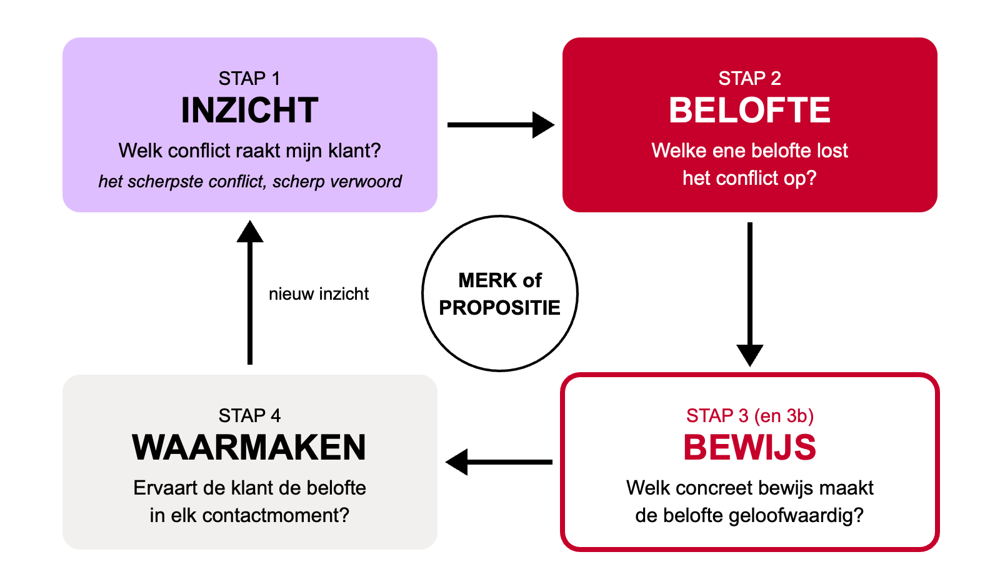
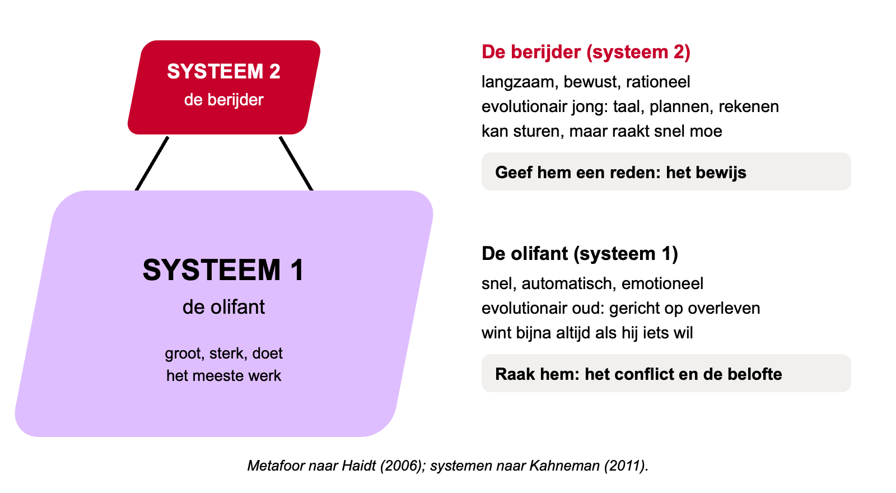
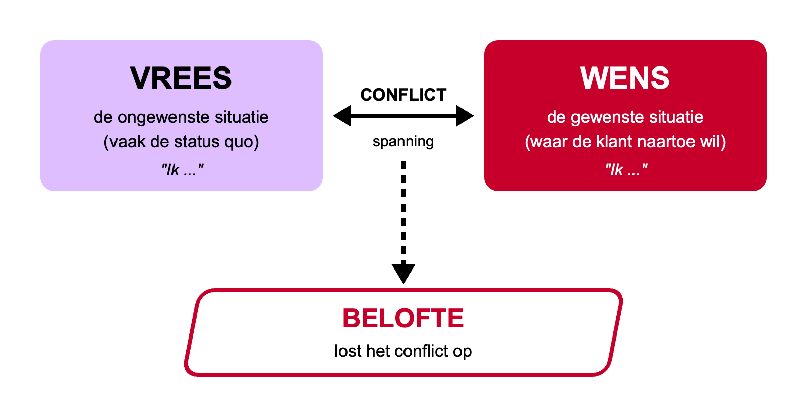
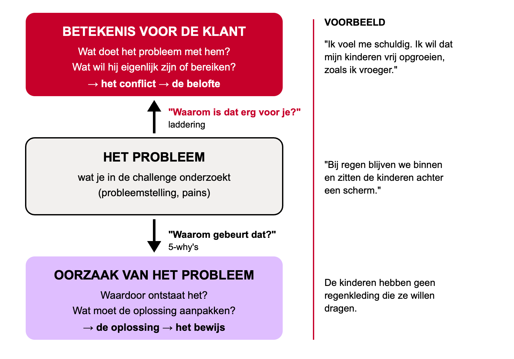
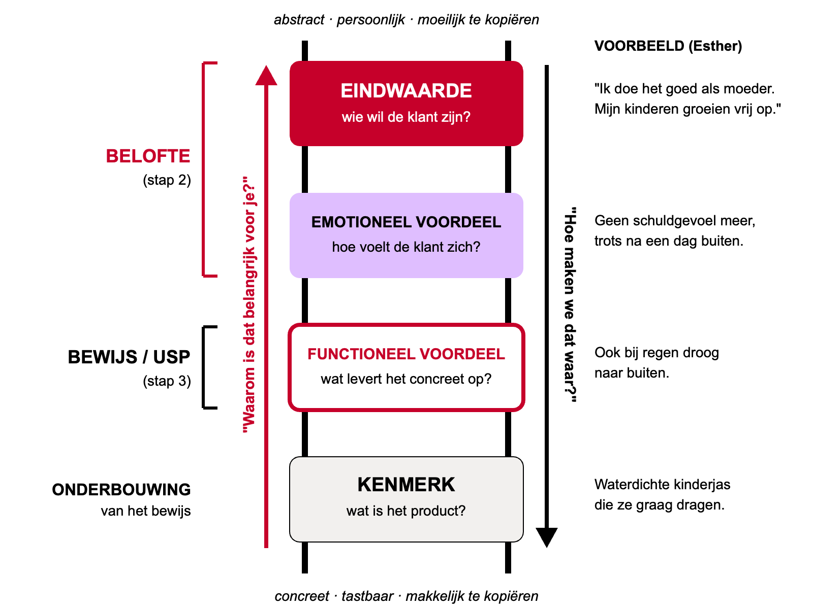

Van belofte tot rendabel businessmodel
In blok 1 heb je geleerd hoe je een probleem onderzoekt, een oplossing bedenkt en die test. In dit blok draait alles om de vraag hoe je dat idee rendabel maakt. Daarvoor heb je kennis nodig uit vier vakgebieden: marketing, sales, juridisch en financieel. Deze reader bundelt die kennis in zes hoofdstukken, in dezelfde volgorde als de kennisblokken op maandag en woensdag. Elk hoofdstuk vult een deel van het Sustainable Business Model Canvas (SBMC) dat je in Business Challenge II valideert. Zo is wat je hier leest meteen bruikbaar voor je challenge en tegelijk de stof voor de kennistoets Vakkennis. Waar het past, zie je hoe Spark, het bedrijf uit de reader van blok 1, dezelfde vraagstukken in de praktijk aanpakte.
Het SBMC als kaart
Waarom vier vakgebieden en hoe ze samen één businessmodel vormen
Van werkend idee naar rendabel idee
Aan het eind van blok 1 had je een oplossing die je had getest. Misschien werkte die zelfs al bij een paar klanten. Maar een oplossing die werkt, is nog geen onderneming die werkt. Daarvoor moet je kunnen uitleggen wie je klant is en waarom die juist voor jou kiest (marketing), hoe je van een geïnteresseerde naar een getekende deal komt (sales), welke afspraken en regels je daarbij beschermen of beperken (juridisch) en of je er uiteindelijk geld aan overhoudt en hoe je de groei betaalt (financieel).
Die vier vragen zijn geen losse vakken. Ze zijn vier kanten van hetzelfde businessmodel. Daarom gebruiken we in dit blok het Sustainable Business Model Canvas (SBMC) als kaart. Je kent het canvas uit jaar 1 en uit blok 1: negen bouwstenen, met rechts de kant van de klant (hoe creëer je waarde voor wie?) en links de kant van de organisatie (hoe lever je die waarde, met wie en tegen welke kosten?). In blok 1 ging je vooral de diepte in op één deel van het canvas. In Business Challenge II lever je een gevalideerd SBMC van de hele onderneming, waarin alle vakgebieden uit deze reader terugkomen, ook de onderdelen buiten je eigen scope. Zo laat je zien dat je het complete businessmodel overziet.
H3H5
H1H4
H1H2H3H4
H1H2
H1H2
H3H5
H5H6
Zo gebruik je deze reader in je challenge
De kennisblokken lopen van week 12 tot en met week 17. Na elk kennisblok ga je met je klas aan de slag: ongeveer een uur pas je de stof toe op je eigen challenge, ongeveer een uur krijg je coaching. Lees het hoofdstuk daarom vóór het kennisblok. Dan gebruik je het half uur met de docent om vragen te stellen en verbanden te leggen en heb je in het uur daarna al een begin.
- Week 12, Marketing. Je bouwt een buyer persona, zoekt het conflict van je klant en formuleert een belofte met bewijs. Dat vult de rechterkant van je SBMC.
- Week 13, Sales. Je bepaalt wie je ideale klant is (ICP), hoe je die vindt, hoe je een geïnteresseerde omzet in een afspraak en een deal en hoe je die klant daarna behoudt.
- Week 14 en 15, Juridisch. Je controleert of je afspraken met klanten en partners deugen, waar je aansprakelijk voor bent en wat je wel en niet mag in je marketing.
- Week 16 en 17, Financieel. Je beoordeelt of een investering het waard is en hoe je de start of groei financiert.
Het portfolio dat je in week 17 inlevert, bevat iteraties van je SBMC en per onderdeel je onderzoeksbevindingen, validaties en tests. Wat je per hoofdstuk uitwerkt, is dus direct bewijs voor je portfolio. Gebruik je AI om te sparren of te schrijven, leg dan vast hoe en waarvoor: de AI-verantwoording is een randvoorwaarde voor het CGI.
Spark, het bedrijf uit de reader van blok 1, laat zien hoe de vier vakgebieden in elkaar grijpen. Spark verkoopt zonne-energiekits niet aan huishoudens, maar aan distributiepartners in Afrika: een B2B-klant met een eigen beslisser (sales). Die partners kozen voor Spark omdat het als enige product én financiering combineerde (marketing: een belofte met bewijs). Daarvoor waren afspraken nodig met de Nederlandse overheid en exportkredietverzekeraar Atradius (juridisch: key partners en contracten). En de hele groei werd betaald met een mix van eigen en vreemd vermogen, van een convertible lening tot een Series A (financieel). In elk hoofdstuk zie je een stukje van dat verhaal terug.
Marketing: een belofte die je waarmaakt
Wat beloof jij je klant, waarom gelooft die je en merkt de klant in alles dat je die belofte waarmaakt?
Waarom dit hoofdstuk?
Je weet uit blok 1 hoe je een klantprobleem onderzoekt en wie je klant is: welke jobs, pains en gains die heeft en welke waardepropositie daarbij past. Marketing voegt daar in dit blok één centrale vraag aan toe: wat beloof jij je klant, waarom gelooft die je en merkt de klant in alles dat je die belofte waarmaakt?
Die vraag klinkt eenvoudig, maar in de praktijk gaat het hier vaak mis. Kijk naar de websites van vijf installatiebedrijven, vijf fietsenwinkels of vijf webshops in dezelfde categorie. Grote kans dat je overal dezelfde woorden leest: kwaliteit, service, persoonlijk, betrouwbaar, scherp geprijsd. Voor de klant zijn die bedrijven daardoor inwisselbaar. En als alles hetzelfde lijkt, kiest de klant op het enige wat nog verschilt: de prijs. Een onderscheidende belofte geeft de klant een andere reden om voor jou te kiezen. Dat is precies waarom marketing in een blok over rendabel maken hoort: klanten die kiezen voor wat je belooft, zijn minder prijsgevoelig en komen vaker terug.
Wat je al weet en hier gebruikt. Het Value Proposition Canvas met customer jobs (functioneel, sociaal en emotioneel), pains en gains; de persona en de empathy map; de Mom Test (vraag naar concreet gedrag in het verleden, niet naar meningen over de toekomst); de customer journey met fasen, touchpoints en pijnpunten; positionering op basisniveau en de 4 P's.
Wat hier bewust niet in staat. Salesfunnel, leadkwalificatie en CRM vind je in hoofdstuk 2. Prijs en marge in hoofdstuk 5. De juridische regels rond reclame en beïnvloeding in hoofdstuk 4. Een marketingplan met budget en KPI's komt in jaar 3.
1 · Merk, positionering, propositie en campagne
Vier begrippen worden in de praktijk vaak door elkaar gebruikt. Zet ze voor jezelf scherp:
| Begrip | Betekenis | Voorbeeld |
|---|---|---|
| Merk | Het geheel van beelden, gevoelens en verwachtingen dat mensen bij een bedrijf of product hebben. Een merk bestaat in het hoofd van klanten en medewerkers, niet in het logo. | Wat je denkt en voelt als je "HEMA" hoort. |
| Positionering | De plek die je in het hoofd van de klant wilt innemen, ten opzichte van alternatieven. Een keuze: waar wil je om bekendstaan en waar niet? | Interpolis wil bekendstaan als de verzekeraar die het helder maakt. |
| Propositie | Een concreet aanbod aan een specifieke klantgroep: wat krijg je, voor wie is het en waarom is het de moeite waard? De waardepropositie uit het VPC is een propositie. | Een onderhoudsabonnement van een fietsenwinkel voor forenzen. |
| Campagne | Een tijdelijke reeks uitingen rond één boodschap. | Bever: "Bever laat je niet zitten". |
Een sterke positionering gaat dus verder dan een logo of een slogan. Het is de optelsom van alles wat klanten van je meemaken. Een belofte op een website is pas het begin.
2 · Het kernmodel: inzicht, belofte, bewijs en waarmaken
In dit hoofdstuk werk je met één model. Het is gebaseerd op de merkenaanpak van Oosterhout en Stut (2013), die de kern samenvatten als behoefte, belofte en bewijs. Wij noemen de eerste stap inzicht, omdat het om meer gaat dan een behoefte: het gaat om een spanning die de klant ervaart. Een vierde stap, waarmaken, maakt het model af.
| Stap | Kernvraag | Kernbegrip | Waar in het SBMC? |
|---|---|---|---|
| 1. Inzicht | Welk conflict raakt mijn klant het meest en waarom? | Het scherpste conflict (vrees tegenover wens), met waarom het de klant raakt | Klantsegmenten |
| 2. Belofte | Welke ene belofte lost dat conflict op? | De merkmissie: de belofte aan de gebruiker | Waardepropositie |
| 3. Bewijs | Welk concreet bewijs maakt de belofte geloofwaardig? | De keiharde USP | Waardepropositie (onderbouwing) en kanalen |
| 4. Waarmaken | Ervaart de klant de belofte in elk contactmoment? | Consistentie in alles wat je doet | Kanalen en klantrelaties |
De logica: een aanbod wordt relevant als het een probleem oplost dat de klant echt voelt. De kern van dat probleem is een conflict: aan de ene kant de situatie die de klant vreest (vaak de huidige situatie), aan de andere kant de situatie die de klant wenst. Je belofte lost dat conflict op. Omdat klanten beloftes niet zomaar geloven, heb je bewijs nodig. En omdat de klant je beoordeelt op alles wat hij meemaakt, moet je de belofte waarmaken in elk contactmoment. Wat je daar over je klant leert, levert weer nieuw inzicht op. Zo is het een cirkel.


In de praktijk: Nike.
- Inzicht: bijna iedereen wil erkend worden voor wat hij presteert, maar de meeste mensen voelen dat topsport alleen voor een paar uitverkorenen is ("topsport is niet voor mij" tegenover "ik ben een topsporter").
- Belofte: "If you have a body, you are an athlete". De klant is de held, niet het merk.
- Bewijs: topsporters in vrijwel alle uitingen, zodat je je met de held vereenzelvigt, met daaronder concrete eigenschappen per product en diensten als trainingsapps.
- Waarmaken: winkels die aanvoelen als een professionele sportomgeving.
Twee niveaus: merk en propositie
Het model werkt op twee niveaus. De structuur is gelijk; de reikwijdte en houdbaarheid verschillen.
| Merkniveau | Propositieniveau | |
|---|---|---|
| Wat formuleer je? | Een merkbelofte (merkmissie) | Een propositiebelofte of campagneboodschap |
| Waarvoor? | Alles wat het merk doet | Eén aanbod, één doelgroep of één periode |
| Houdbaarheid | Lang, vaak jaren | Korter, past zich aan het aanbod aan |
| Functioneel of emotioneel | Vooral emotioneel, de eindwaarde staat centraal | Vaak meer functioneel, altijd passend binnen de merkbelofte |
| Voorbeeld | Bever: "Niemand is een binnenmens" | Menzis Topzorg: sneller duidelijkheid en de beste behandeling bij een ernstige diagnose |
| In je challenge | Je (her)positioneert een bedrijf als geheel | Je ontwikkelt een nieuwe dienst of verbetering voor een bedrijf |
Een propositie past altijd binnen de merkbelofte; anders maakt ze het merk onscherp. Benoem in je challenge expliciet op welk niveau je werkt.
Hoe klanten kiezen: systeem 1 en systeem 2
Om te begrijpen waarom het model werkt, heb je een basisidee nodig van hoe mensen beslissingen nemen. Probeer het zelf: een knuppel en een bal kosten samen 1,10 euro. De knuppel kost 1 euro meer dan de bal. Hoeveel kost de bal? Grote kans dat "10 cent" in je opkwam. Dat voelt goed, maar dan kost de knuppel 1,10 en samen 1,20. Het juiste antwoord is 5 cent (Frederick, 2005). Wat je hier ervaart, is het verschil tussen twee manieren van denken, die Stanovich en West (2000) systeem 1 en systeem 2 noemden en die Kahneman (2011) wereldberoemd maakte.
| Systeem 1 | Systeem 2 | |
|---|---|---|
| Hoe werkt het? | Snel, automatisch, intuïtief, emotioneel. Kost geen moeite. | Langzaam, bewust, rationeel, analytisch. Kost moeite en aandacht. |
| Voorbeeld | Je pakt een bekend merk uit het schap zonder na te denken. | Je vergelijkt drie verzekeringen op dekking en premie. |
| Wat het nodig heeft | Herkenning, een goed gevoel, een eenvoudige boodschap, signalen van anderen | Argumenten, feiten, een reden om de keuze te rechtvaardigen |
| Rol in het model | Geraakt door het conflict en de belofte | Overtuigd door het bewijs |
Systeem 1 werkt met associaties, maakt een kloppend verhaal van wat er op dat moment is (what you see is all there is), houdt van gemak (verwerkingsgemak: wat bekend en makkelijk voelt, vinden we eerder waar) en gebruikt vuistregels (heuristieken). Systeem 2 kan corrigeren, maar is lui: het zoekt vaak alleen een reden om de keuze van systeem 1 goed te keuren. Pas bij grote of nieuwe beslissingen gaat het echt aan het werk. Psycholoog Jonathan Haidt (2006) vergelijkt dit met een berijder op een olifant: de berijder (systeem 2) denkt dat hij stuurt, maar wil de olifant (systeem 1) iets anders, dan verliest de berijder bijna altijd. In populaire boeken heet systeem 1 ook wel het oerbrein; dat is een metafoor.


Dit verklaart waarom je zowel een belofte als bewijs nodig hebt. De belofte raakt het gevoel (systeem 1). Het bewijs geeft systeem 2 een rationele rechtvaardiging om te kiezen; consumentenpsycholoog Fred van Raaij noemt dat het alibi. En een concreet bewijs is tegelijk makkelijk te verwerken voor systeem 1.
3 · Stap 1. Inzicht: van buyer persona via conflict naar inzicht
Het inzicht is de eerste pijler. Alles wat daarna komt, bouwt erop voort; een zwak inzicht levert een zwakke belofte op, hoe mooi die ook geformuleerd is. Je loopt daarvoor een trap op: klantonderzoek (gesprekken volgens de Mom Test) → buyer persona → drie tot vijf conflicten → het scherpste conflict → één inzicht. Vergelijk het met een onderzoek: de conflicten zijn je bevindingen, het inzicht is je conclusie.
De buyer persona
Een buyer persona is een op onderzoek gebaseerde beschrijving van een representatieve klant, met de nadruk op koopinzichten: niet alleen wie de klant is, maar wat hem in beweging zet, wat hij wil bereiken, wat hem tegenhoudt en hoe hij kiest (Revella, 2015). Daarin verschilt hij van de persona die je kent: veel teams weten na een persona-sessie dat hun klant blond haar heeft en van wandelen houdt, maar nog steeds niet waarom die klant iets koopt of juist niet.
| Persona (profiel) | Buyer persona | |
|---|---|---|
| Kernvraag | Wie is de klant? | Waarom en hoe kiest de klant (niet) voor ons? |
| Inhoud | Demografie, dagindeling, interesses, gedrag | Aanleiding, gewenst resultaat, drempels, beslissingscriteria en beslisproces, plus een kort profiel |
| Bron | Vaak een mix van onderzoek en aannames | Interviews met echte (recente) klanten en niet-klanten |
| Bruikbaar voor | Productontwerp, empathie | Positionering, belofte, bewijs en communicatie |
In dit hoofdstuk is de buyer persona geen doel op zich, maar grondstof voor conflicten. Je bouwt hem daarom op uit tien onderdelen die bewust zoeken naar spanning: (1) wie en context, alleen wat het gedrag verklaart; (2) aanleiding: wanneer gaat de klant zoeken?; (3) huidig gedrag en alternatieven; (4) wensen en doelen; (5) vrees en drempels; (6) overtuigingen, zoals "dat is niets voor mij"; (7) dilemma's: tussen welke twee dingen zit de klant in?; (8) beslisgedrag: waarop kiest de klant en wie beslist mee?; (9) letterlijke citaten; (10) conflictkandidaten. Onderdeel 4, 5 en 7 zijn het hart: wensen, vrees en dilemma's zijn letterlijk de bouwstenen van een conflict. Let ook op het verschil tussen zeggen en doen; die afwijking is vaak zelf een inzicht. Een leeg werkblad vind je achterin (werkblad A).
In de praktijk (fictief): Esther, 38. Werkt vier dagen, twee kinderen van 6 en 9, woont in de stad, groeide op in Drenthe, "altijd buiten".
- Aanleiding: in de herfstvakantie zaten de kinderen drie regenachtige dagen achter een scherm: "Toen dacht ik: dit wil ik niet."
- Huidig gedrag: wandelt alleen als het droog is; oude jassen die niet meer waterdicht zijn; plant uitstapjes maar zegt ze vaak af.
- Wens: "Ik wil dat mijn kinderen opgroeien zoals ik: vies worden, ontdekken."
- Vrees: "Bij slecht weer wordt het gewoon zeuren."
- Overtuiging: "Outdoorwinkels zijn voor mensen die de Mont Blanc op gaan."
- Dilemma: wil goede spullen, maar niet overdreven of te duur.
- Citaat: "Ik ben eerlijk gezegd een binnenmens geworden."
Let op: B2B-klanten zijn ook mensen. Bij een zakelijke klant beslist vaak een groep mee en tellen kosten, risico en rendement zwaar. Toch kopen ook zakelijke klanten om persoonlijke redenen: ze willen geen fout maken, serieus genomen worden of er goed op staan bij hun leidinggevende. Maak bij B2B een buyer persona van de belangrijkste beslisser of beïnvloeder. Hoe je die beslisser vindt en kwalificeert, lees je in hoofdstuk 2.
Het conflict: de spanning tussen vrees en wens
Het belangrijkste begrip van dit hoofdstuk komt van Oosterhout en Stut (2013). Een conflict is de spanning tussen de gewenste situatie (de wens) en de ongewenste of gevreesde situatie (de vrees) die een klant ervaart. In elke markt zijn meerdere conflicten. Sommige zijn al opgelost door bestaande merken, andere niet. Daar ligt je kans: wie een onopgelost conflict oplost, wordt relevant en zelfs onmisbaar.
Je legt een conflict vast in het conflictschema: vrees en wens als twee tegengestelde uitspraken naast elkaar, met daaronder de belofte die het oplost. Regels: schrijf beide kanten als ik-uitspraak vanuit de klant ("Ik ben bang dat ...", "Ik wil ..."); gebruik de taal van de klant uit je citaten; maak de vrees concreet ("Ik sta op zaterdag zonder brood" in plaats van "leveringsproblemen"); maak de wens positief en menselijk, niet een beschrijving van jouw product; en zorg voor echte spanning. Is de wens alleen de ontkenning van de vrees ("ik heb geen tijd" tegenover "ik wil tijd"), zoek dan verder naar de emotie eronder.


Je kunt op twee manieren naar een conflict kijken. Van vrees naar wens: de klant zit in een situatie die hij niet wil en het merk helpt hem naar de andere kant (Google: overvloed aan informatie tegenover snel precies vinden wat je zoekt). Of onverenigbare werelden verenigen: de klant wil twee dingen die niet samen lijken te kunnen (HEMA: een leuk leven en een kleine portemonnee; Nespresso: exclusieve koffie en gemak thuis).
| Merk | Vrees | Wens | Belofte |
|---|---|---|---|
| Nike | Topsport is niet voor mij weggelegd | Ik ben een topsporter | If you have a body, you are an athlete |
| Dove | Mooi zijn is voor topmodellen | Ik ben mooi | Tijd voor echte schoonheid |
| HEMA | Mijn dagelijks leven is saai | Ik wil elke dag een leuk leven | Een leuk leven hoeft niet duur te zijn |
| Monuta | Ik moet allerlei beslissingen nemen rond de uitvaart | Ik wil mijn verdriet verwerken | Alle aandacht voor de nabestaanden |
| Bever | Ik zit te veel binnen | Ik ben een buitenmens | Niemand is een binnenmens |
Je probleemonderzoek uit blok 1 is hier geen overbodig werk, maar grondstof. Het conflict kijkt naar hetzelfde probleem door de ogen van de klant. Daarvoor vraag je ook "waarom", maar in een andere richting: de 5-why's gaan omlaag naar de oorzaak van het probleem; laddering gaat omhoog naar de betekenis van het probleem voor de klant ("waarom is dat erg voor je?").


Vier lagen van conflicten
Een goede buyer persona levert meerdere conflicten op. Zoek ze systematisch op vier lagen. De eerste drie ken je van de customer jobs in het VPC en uit de jobs-to-be-done-theorie (Christensen e.a., 2016); de vierde, het zelfbeeld, voegt dit model toe. Denk aan een ijsberg: alleen de functionele laag steekt boven water.
| Laag | Waar gaat het over? | Vraag in het interview | Voorbeeld |
|---|---|---|---|
| Functioneel (instrumenteel) | Het product of de taak: tijd, geld, moeite, kwaliteit | "Wat kost je dit nu aan tijd of moeite?" | "Zeep droogt mijn huid uit" (Dove, vroeger) |
| Emotioneel | Hoe de klant zich voelt: angst, schuld, ergernis, trots | "Hoe voelde dat? Wat deed dat met je?" | "Ik voel me schuldig als de kinderen de hele dag achter een scherm zitten" |
| Sociaal | Hoe anderen de klant zien: erbij horen, status, erkenning | "Wat zeggen anderen daarvan?" | "Bij de groothandel ben ik een klein klantje" |
| Zelfbeeld | Het verschil tussen wie de klant is en wie die wil zijn | "Past dit bij hoe je jezelf ziet?" | "Ik ben een binnenmens geworden" tegenover "Ik ben een buitenmens" |
De sterkste conflicten raken basale behoeften zoals erbij horen, bezit, status en erkenning. De laag zelfbeeld verdient extra aandacht: het verschil tussen het actual self (wie ik nu ben) en het ideal self (wie ik wil zijn) roept onprettige gevoelens op, en hoe groter dat verschil, hoe sterker (Higgins, 1987). Een merk dat helpt worden wie je wilt zijn, raakt een krachtig mechanisme.
Van instrumenteel naar emotioneel conflict: laddering
Wie conflicten zoekt, vindt er snel een paar, maar dat zijn meestal instrumentele conflicten (gemaksconflicten): iets kost te veel tijd, moeite of geld. Daar is niets mis mee, maar ze zijn relevant én makkelijk te kopiëren. De sterkste merken lossen een emotioneel conflict op, dat de persoon zelf raakt: gevoel, identiteit, relaties. Dat is moeilijk te kopiëren en bouwt een band. Dove is het schoolvoorbeeld: van "zeep droogt mijn huid uit" naar "mooi zijn is voor topmodellen" tegenover "ik ben mooi". Een pain uit je VPC is vaak een instrumenteel conflict. De vaardigheid die je hier leert, is doorvragen naar het emotionele conflict dat eronder ligt.
Daarvoor gebruik je de means-end chain (Gutman, 1982): klanten zien een product als middel om een doel te bereiken. Ze kopen geen kenmerken, maar wat die voor hen doen. De interviewtechniek heet laddering (Reynolds en Gutman, 1988): je begint bij een kenmerk of een concrete ervaring en vraagt steeds door met een variant van "waarom is dat belangrijk voor je?". Je stopt als de klant een waarde noemt die hij niet verder kan uitleggen. Dat is de eindwaarde, een begrip van Rokeach (1973): een levensdoel zoals vrijheid, zelfrespect, veiligheid voor het gezin of erkenning.
| Trede | Betekenis | Voorbeeld: regenjas voor kinderen |
|---|---|---|
| Kenmerk (attribuut) | Een eigenschap van het product | Waterdicht, stoer model, felle kleur |
| Functioneel voordeel | Wat het kenmerk concreet oplevert | Kinderen blijven droog; we gaan ook bij regen naar buiten |
| Emotioneel voordeel | Hoe de klant zich voelt en hoe anderen hem zien | Geen schuldgevoel meer; trots na een dag buiten |
| Eindwaarde | Het levensdoel waar het om gaat | Ik doe het goed als ouder; mijn kinderen groeien vrij op |


Waarom is dit zo krachtig? Je vindt het echte waarom: mensen willen geen boor van zes millimeter, maar een gat van zes millimeter (Levitt) en uiteindelijk het gevoel dat hun leven op orde is. Eindwaarden zijn stabiel en worden door veel mensen gedeeld, dus een belofte op dat niveau gaat lang mee. Hoe hoger op de ladder, hoe moeilijker te kopiëren: een kenmerk is in maanden na te maken, een plek in het hoofd van de klant niet. Campagnes die vooral op emotie bouwen, leiden op lange termijn bijna twee keer zo vaak tot sterke winstgroei als rationele campagnes (Binet en Field, 2013). En één ladder geeft je hele verhaal: de bovenste treden leveren de belofte, het functionele voordeel het bewijs.
In de praktijk (fictief): een ladder in een interview.
Interviewer: Je vertelde dat jullie vorig weekend toch niet zijn gaan wandelen. Hoe kwam dat?
Esther: Het regende, en de kinderen hebben geen goede jassen. (kenmerk)
Interviewer: En wat gebeurde er toen?
Esther: Dan zitten ze weer de hele middag op een tablet. (functioneel voordeel dat ontbreekt)
Interviewer: Wat vind je daarvan?
Esther: Ik voel me er eerlijk gezegd schuldig over. (emotioneel voordeel dat ontbreekt)
Interviewer: Waarom is dat belangrijk voor je?
Esther: Ik wil dat ze opgroeien zoals ik. Dan heb ik het gevoel dat ik het goed doe als moeder. (eindwaarde)
Het instrumentele conflict (geen goede regenkleding) is waar, maar het emotionele conflict ligt dieper. Dat maakt een belofte sterk; de regenkleding wordt het bewijs.
Tips: ladder op een echte ervaring ("vertel eens over de laatste keer dat ...") en niet op een idee van jezelf, zoals de Mom Test voorschrijft. Varieer je waarom-vraag ("wat levert dat je op?", "wat gebeurt er als dat niet lukt?"). Geef stiltes de ruimte. Noem zelf geen waarden, laat de klant de woorden kiezen. En ladder in twee richtingen: "waarom?" brengt je omhoog naar de belofte, "hoe?" omlaag naar het bewijs.
Let op: emotie zonder bewijs is lucht. Een belofte die alleen over een eindwaarde gaat ("vrijheid", "geluk") zonder concreet bewijs eronder, is inwisselbaar: elk merk kan vrijheid beloven. Pas als de eindwaarde verbonden is met een concreet functioneel voordeel en een echt kenmerk, wordt de belofte geloofwaardig en onderscheidend.
Waarom werkt het? Verliesaversie. Kahneman en Tversky (1979) toonden aan dat verliezen psychologisch zwaarder wegen dan even grote winsten; 100 euro verliezen doet ongeveer twee keer zoveel pijn als 100 euro winnen plezier geeft. Daarom is de vreeskant van het conflict zo'n sterke drijfveer en is het belangrijk om de vrees scherp en concreet te formuleren.
Het scherpste conflict kiezen
Je kiest pas als je er meerdere hebt. Verzamel eerst breed: lees je interviews opnieuw met een conflictbril, formuleer minstens één conflict per laag, ladder elk functioneel conflict omhoog, zoek de onverenigbare werelden in de dilemma's, betrek mensen die dicht bij de klant staan (bij Monuta kwam het beslissende conflict van een uitvaartbegeleidster, niet uit marktonderzoek) en kijk welke conflicten concurrenten laten liggen. Doel: drie tot vijf goed geformuleerde conflicten. Daarna kies je met de conflictchecklist, een trechter van vijf vragen:
- Emotioneel relevant: raakt het de klant echt?
- Empowert: kan de klant er zelf sterker van worden?
- Groot genoeg: ervaren genoeg klanten dit conflict?
- Uniek: lost nog geen ander merk het op?
- Geloofwaardig op te lossen: kun jij het echt oplossen? Dit is een harde eis. Een conflict dat je niet geloofwaardig kunt oplossen, levert een belofte op die je niet waarmaakt, en dat is erger dan geen belofte.
Geef elk conflict per vraag een score van 1 tot 5 en onderbouw elke score met een bevinding uit je onderzoek. De onderbouwing is belangrijker dan het totaal.
Let op: vier veelgemaakte fouten bij conflicten.
- Het gemaksconflict: je blijft hangen in tijd, geld en moeite; ladder verder omhoog.
- Het productconflict: de wens beschrijft je eigen product ("ik wil een app die ...").
- Het verzonnen conflict: je kunt geen enkel letterlijk citaat noemen dat het ondersteunt.
- Het conflict zonder spanning: de wens is alleen de ontkenning van de vrees.
Van conflict naar inzicht
Het conflict is de kern: twee korte ik-uitspraken. Een inzicht maakt daar een herkenbaar verhaal van, met vooral waarom het de klant raakt. Dat waarom haal je uit de laddering: het emotionele voordeel of de eindwaarde die op het spel staat. Gebruik de inzichtformule:
Voorbeeld Bever: "Ik wil graag buiten zijn, maar door werk, gezin en slecht weer zit ik bijna altijd binnen. Dat schuurt, want zo ben ik niet wie ik wil zijn." Kijk naar het want-deel: daar zit de eindwaarde, de brug naar de belofte. Een goed inzicht is herkenbaar maar niet vanzelfsprekend, staat in de ik-vorm en de taal van de klant, bevat een "maar" en een "want", gaat over de klant en niet over je product en is te herleiden tot je interviews. Toets het met de herkenningstest: leg het voor aan mensen die op je buyer persona lijken en vraag niet "vind je dit goed?" maar "herken je dit, wanneer had je dit voor het laatst?". "Ja, zo is het precies" betekent dat je goed zit; "ja, dat zal wel" betekent dat het te algemeen is.
Let op: valkuilen bij een inzicht.
- Een feit als inzicht: "90 procent van de tijd zitten mensen binnen" zegt niet wat het met de klant doet.
- Een productwens als inzicht: "klanten willen betere regenjassen".
- Een inzicht zonder spanning: "ouders vinden veiligheid belangrijk".
- Een inzicht zonder waarom: "ik wil naar buiten, maar het regent vaak".
4 · Stap 2. Belofte: het conflict oplossen
Met je inzicht weet je welk conflict je klant het meest raakt. Nu moet je het oplossen, met de belofte. Oosterhout en Stut noemen dit de merkmissie: het antwoord op de vraag waarom het merk voor de klant bestaat. De harde eis is dat de belofte het gekozen conflict oplost. Dat klinkt vanzelfsprekend, maar het gaat vaak mis: er is een sterk conflict en de belofte gaat over iets anders, meestal over het eigen product. Leg daarom altijd conflict en belofte naast elkaar en vraag: als de klant deze belofte gelooft, is het conflict dan opgelost? En onthoud: belofte maakt schuld. Wat je belooft, moet je kunnen bewijzen en waarmaken.
Sterke beloftes hebben vaak deze kenmerken gemeen. Zie ze als inspiratie, niet als afvinklijst:
- Positief. Een conflict roept negatieve gevoelens op. Een sterke belofte lost die angst op in plaats van haar aan te wakkeren, zodat de negativiteit niet aan het merk blijft kleven.
- Eindwaarde. Sterke beloftes verwijzen naar een emotionele eindwaarde (zelfvertrouwen bij Dove, erkenning bij Nike, plezier bij HEMA), vaak zonder die letterlijk te noemen. De klant voelt haar zelf.
- Empowerment. De klant is de held, niet het merk. Test: staat er "wij zijn de beste", dan is het merk de held; staat er wat de klant kan worden of bereiken, dan is de klant de held.
- Eenvoud en één woord. Het krachtigste concept in marketing is dat je één woord bezit in het hoofd van de klant (Ries en Trout, 1993): Interpolis = helder, HEMA = leuk, Google = eenvoud.
Stel daarnaast drie praktische vragen: is de belofte zonder uitleg te begrijpen, kun je haar waarmaken en krijgen klanten én medewerkers er zin van om in beweging te komen? Een merkbelofte is meestal vooral emotioneel; een propositiebelofte bevat een duidelijker functioneel deel ("morgen in huis"), dat het best werkt als het verwijst naar een emotionele waarde (gemak, zorgeloosheid).
Werkwijze: (A) neem je inzicht als vertrekpunt; de "maar" laat zien wat de belofte moet wegnemen, de "want" waar ze naartoe moet. (B) Maak de eindwaarde scherp. (C) Schrijf minstens vijf varianten vanuit verschillende invalshoeken: vanuit de wens, vanuit het opheffen van de vrees, vanuit de eindwaarde, als uitnodiging. (D) Toets en kies: lost hij het conflict op, is hij positief, is de klant de held, is hij eenvoudig, kun je hem waarmaken?
In de praktijk: Bever. Onderzoek van Wageningen University in opdracht van Bever liet zien dat twee derde van de Nederlanders zichzelf als buitenmens ziet, maar zo'n 90 procent van de dag binnen doorbrengt. Bever, lang een merk voor fanatieke liefhebbers, wilde toegankelijker worden. Het conflict (onze lezing): "ik ben eigenlijk een binnenmens geworden" tegenover "ik ben een buitenmens", op de laag van het zelfbeeld. De belofte: "Niemand is een binnenmens". Positief, eenvoudig en de klant is de held: jij bent in de kern een buitenmens. Het aandeel Nederlanders dat Bever avontuurlijk vond, steeg van 51 naar 72 procent.
| Veelgemaakte fout | Voorbeeld | Beter |
|---|---|---|
| De belofte beschrijft het product | "Wij verkopen duurzame outdoorkleding" | Ladder omhoog: wat levert het de klant op? |
| De belofte lost een ander conflict op | Conflict over schuldgevoel, belofte over lage prijzen | Leg conflict en belofte naast elkaar |
| Het merk is de held | "De beste buitensportwinkel van Nederland" | Maak de klant de held |
| Containerbegrippen | "Kwaliteit, service en betrouwbaarheid" | Kies een punt van verschil, geen punt van gelijkheid |
| Te veel beloftes tegelijk | "Snel, goedkoop, duurzaam en persoonlijk" | Eén belofte; de rest kan bewijs zijn |
| Niet waar te maken | "Altijd binnen een uur geleverd" zonder de logistiek | Beloof alleen wat je kunt bewijzen |
| De vrees uitvergroten | "Zonder ons gaat het mis" | Positief formuleren |
5 · Stap 3. Bewijs: de keiharde USP
Een belofte zonder bewijs is een claim. Bewijs doet drie dingen: het geeft systeem 2 een reden (het alibi), het is door zijn concreetheid makkelijk voor systeem 1 en het wekt vertrouwen, omdat de klant het kan controleren. Oosterhout en Stut noemen het bewijs de keiharde USP. USP staat voor unique selling proposition (Reeves, 1961): een concreet voorstel aan de klant, uniek ten opzichte van de concurrentie en sterk genoeg om veel klanten in beweging te brengen. In dit model is de keiharde USP het concrete, overtuigende verkoopargument dat de belofte bewijst. Twee regels: de belofte is leidend (elke USP is terug te voeren op de belofte) en de USP is concreet (geen vage benefit).
Kenmerk, voordeel en belofte
Twee fouten komen vaak voor: een kale specificatie als bewijs ("Gore-Tex membraan") of een vage benefit ("comfortabel"). Een goede USP zit daartussen: een concreet voordeel dat de belofte bewijst. In verkooptrainingen heet dit het kenmerk-voordeel-baat-principe. Het past precies op de ladder:
| Trede | In het model | Vraag | Voorbeeld Coolblue |
|---|---|---|---|
| Waarde | Belofte | Waarom is dat belangrijk? | Zorgeloos kopen ("Alles voor een glimlach") |
| Concreet voordeel | USP, het bewijs | Wat heeft de klant eraan? | Vandaag besteld, morgen in huis; bezorgers die installeren en het oude apparaat meenemen |
| Kenmerk | Onderbouwing van de USP | Hoe doen we dat? | Eigen distributiecentra en eigen bezorgdienst |
De USP is dus de middelste trede. Een concreet getal, beeld of demonstratie werkt beter dan een bijvoeglijk naamwoord, omdat het makkelijker te verwerken is (verwerkingsgemak). En één sterke reden is genoeg: mensen hebben vaak weinig informatie nodig om goed te kiezen (Dijksterhuis, 2007), en te veel USP's maken een merk onscherp. Google begon met een ongekend eenvoudige zoekpagina, en raakte die eenvoud uit beeld toen het in hoog tempo tientallen diensten lanceerde.
Samenhang en soorten bewijs
Bewijs moet kloppen met de belofte. Mensen zoeken van nature naar coherentie en naar bevestiging in plaats van tegenbewijs (confirmation bias). Bewijs dat past, versterkt de belofte; bewijs dat niet past, ondermijnt haar, ook als het op zichzelf een goed argument is. Een merk dat eenvoud belooft met een website vol tarieven en voorwaarden, klopt niet.
| Soort bewijs | Voorbeeld | Aandachtspunt |
|---|---|---|
| Productkenmerk of dienst | Technische eigenschappen per schoen | Vertaal het kenmerk naar een voordeel |
| Werkwijze of proces | Samen met ouder en kind de schoolroute fietsen | Maak het zichtbaar |
| Garantie | "Niet goed, geld terug" | Moet je ook echt nakomen |
| Demonstratie | Proefrit, proefperiode | Werkt sterk voor systeem 1 |
| Cijfers en data | Levertijd, besparing in euro's per jaar | Moet waar en controleerbaar zijn |
| Keurmerk of certificaat | Branchekeurmerk | Alleen erkende keurmerken |
| Ervaringen van klanten | Reviews, klantverhalen | Moeten echt zijn (zie hoofdstuk 4) |
| Expert of autoriteit | Advies van een fysiotherapeut | Moet bij de belofte passen |
| Gedrag van het bedrijf | Eigen medewerkers als model in de campagne | Moeilijk te faken, dus krachtig |
| Symbolisch bewijs | De ongelijk verdeelde reep van Tony's Chocolonely | Moet direct begrijpelijk zijn |
Toets elke USP met de USP-checklist: is hij relevant (lost hij een conflict op?), onderscheidend (kan de concurrent niet hetzelfde zeggen?), samenhangend (versterkt hij de belofte?) en vernieuwend (klanten raken gewend aan bewijs)? En test bewijs met experimenten, niet met meningen: wat mensen zeggen, is vaak niet wat ze doen. Twee varianten van een landingspagina of advertentie, en meten welke meer aanvragen oplevert, zegt meer dan een interview. Dat sluit aan op de manier van testen die je kent uit blok 1.
Spark verkocht aan distributiepartners in Afrika, en die partners hadden veel keus in zonne-energiekits. Bekijk het eens door de bril van zo'n partner. De wens: een groeiend bedrijf dat mensen toegang geeft tot energie en daar inkomsten uit haalt. De vrees: veel geld vastzetten in voorraad, met producten die kapotgaan, waarna eindklanten hun termijnen niet meer betalen. De belofte van Spark kun je samenvatten in één woord: ontzorgen. Het bewijs zat in vier lagen. Eerst technisch goede producten. Daarna toegang tot financiering: via het Access to Finance-programma konden partners grotere orders betalen tegen Nederlandse in plaats van lokale rente, de kits direct in de markt zetten en er inkomsten uit halen, zodat de baten tegenover de kosten kwamen te staan. Verder onboarding en een serviceplatform dat partners inzicht en overzicht gaf en de administratie makkelijker maakte. En tot slot technische ondersteuning, want als een kit kapotging, stopte de eindklant met betalen. Malango Washikala, CEO van distributiepartner Altech in Congo, zei het zo: "They are a pioneer as far as combining both product supply and financing." Dat bewijs was concreet, controleerbaar en moeilijk te kopiëren, omdat concurrenten dat netwerk niet hadden.
6 · Het beslismoment: gedragspsychologie
Tussen een goed verhaal en een aankoop zit het moment waarop de klant beslist. Dan werkt vooral systeem 1: weinig tijd, afleiding, vuistregels. Gedragspsychologie helpt je de bestaande belofte en het bewijs op dat moment geloofwaardig en aantrekkelijk te maken. Het gaat dus niet om een nieuwe belofte. Een principe dat niet bij de belofte past, ondermijnt haar.
De zeven principes van Cialdini
Robert Cialdini beschreef in Influence zes principes van beïnvloeding en voegde in Pre-suasion (2016) een zevende toe: eenheid. We delen ze in naar wat ze in het model doen.
| Principe | De vuistregel | Voorbeeld |
|---|---|---|
| De belofte geloofwaardig maken | ||
| Sociale bewijskracht | Als veel anderen (die op mij lijken) het doen, is het waarschijnlijk goed. Werkt vooral bij onzekerheid. | Reviewscores; echte klanten in beeld |
| Autoriteit | Als een deskundige het zegt, zal het kloppen. | Keurmerk, vakprijs, de expert in de winkel |
| Sympathie | We zeggen eerder ja tegen mensen die we aardig vinden of die op ons lijken. | Herkenbare medewerkers in plaats van modellen |
| Eenheid | We volgen het liefst mensen die we als "een van ons" zien. | "Wij buitenmensen"; hardloopclubs van sportmerken |
| De drempel om nu te beslissen verlagen | ||
| Wederkerigheid | Als iemand mij iets geeft, wil ik iets terugdoen. | Gratis fietscheck, een handige gids |
| Commitment en consistentie | Wie ergens ja tegen zei, wil daar consistent mee handelen. | Gratis proefles, waarna inschrijven logisch is |
| Schaarste | Wat schaars is, is waardevol; wat ik dreig te missen, wil ik hebben. | Een gelimiteerde collectie die kort te koop is |
Framing en keuzearchitectuur
Framing betekent dat dezelfde informatie, anders gepresenteerd, tot een andere keuze leidt (Tversky en Kahneman, 1981). Een winstframe benadrukt wat de klant wint ("met zonnepanelen bespaar je 400 euro per jaar"), een verliesframe wat de klant verliest als hij niet kiest ("zonder zonnepanelen gooi je elk jaar 400 euro weg"). Door verliesaversie zet een verliesframe vaak sterker aan tot actie, maar het botst met de regel dat een belofte positief is. Vuistregel: formuleer de belofte positief en gebruik een verliesframe hooguit spaarzaam op het beslismoment, nooit om angst aan te jagen.
Keuzearchitectuur: kleine veranderingen in hoe een keuze is ingericht, hebben grote invloed. Thaler en Sunstein (2008) noemen zo'n kleine duw een nudge; een bekend voorbeeld is de standaardoptie (default). Het Behavioural Insights Team vatte de lessen samen als EAST: maak gewenst gedrag Easy, Attractive, Social en Timely. Een nudge moet wel transparant zijn, de klant moet er makkelijk onderuit kunnen en het moet de klant zelf beter maken.
Principes kiezen per contactmoment
Gebruik niet alles tegelijk; dat voelt opdringerig. Kies per contactmoment twee of drie principes: (A) kies het contactmoment, (B) bepaal de twijfel van de klant daar (uit de drempels in je buyer persona), (C) kies principes die die twijfel wegnemen én bij de belofte passen, (D) toets op de grens. Een kinderopvang die "met een gerust hart naar je werk" belooft, past niet bij een aftelklok ("nog 2 plekken, reageer binnen 24 uur!"): die veroorzaakt juist onrust. Sociale bewijskracht (ervaringen van andere ouders) en commitment (een kennismakingsbezoek) passen wel.
Let op: beïnvloeden of misleiden? Beïnvloeden mag; elke winkel doet het. Het wordt een probleem als je de klant misleidt of onder druk zet om iets te kiezen wat hij anders niet had gekozen. Online heten zulke trucs dark patterns. De Autoriteit Consument & Markt (ACM) noemt voorbeelden: een aftelklok die na afloop opnieuw begint, nepvoorraadmeldingen, gekochte of verzonnen reviews, voorgevinkte extra's die geld kosten en kosten die pas aan het eind van het bestelproces verschijnen. Praktische test: zou je de techniek de klant recht in het gezicht durven uitleggen? De juridische kant lees je in hoofdstuk 4.
7 · Stap 4. Waarmaken: de belofte in de contactmomenten
Een belofte bestaat pas in de ervaring van de klant. Als de klant in de winkel, aan de telefoon of bij de levering iets anders meemaakt, gelooft hij de belofte niet meer. Het gap-model van Parasuraman, Zeithaml en Berry (1985) verklaart waarom: klanten vergelijken hun verwachting met hun ervaring. Hoe hoger de belofte, hoe hoger de verwachting en hoe pijnlijker het als de ervaring tegenvalt.
Lemon en Verhoef (2016) delen de klantreis in drie fasen: voor de aankoop (oriënteren en vergelijken: reclame, zoekresultaten, reviews, etalage), tijdens de aankoop (kiezen, bestellen, betalen: winkelvloer, adviesgesprek, bestelproces, offerte) en na de aankoop (gebruiken en beoordelen: levering, installatie, factuur, klantenservice, retour). Ze maken ook onderscheid naar wie een contactmoment beheert: eigen (website, winkel, personeel; veel invloed), partner (bezorgdienst, verkooppunten van anderen; gedeeltelijk), klant (hoe de klant het product gebruikt; weinig, maar je kunt het ondersteunen) en sociaal of extern (reviews, vrienden, vergelijkingssites; alleen indirect). Voor de klant is de bezorger van een pakketdienst gewoon "jouw" bezorger.
Niet elk moment weegt even zwaar:
- Moments of truth (Carlzon, 1987): korte momenten waarop de klant in een paar seconden een oordeel vormt over het hele bedrijf, zoals een klacht.
- Zero Moment of Truth (Lecinski, 2011): wat de klant online leest voordat hij jou spreekt. Reviews vormen al een beeld van je belofte.
- Piek-eindregel (Kahneman e.a., 1993): mensen beoordelen een ervaring vooral op het intensiefste moment en op het einde, veel minder op het gemiddelde of de duur.
Met de contactmomentencheck zie je waar de belofte breekt: (A) zet belofte, conflict en belangrijkste bewijs bovenaan; (B) maak een lijst van contactmomenten in alle fasen en van alle soorten; (C) beoordeel per moment of de belofte daar versterkt wordt, neutraal is of breekt; (D) weeg de momenten (pieken, einde, momenten van de waarheid); (E) kies verbeteracties, te beginnen bij de zwaarst wegende momenten waar de belofte breekt. Verbeter de uitvoering vóór de communicatie: sterkere communicatie verhoogt de verwachting, en zonder betere uitvoering wordt de kloof alleen groter.
De belofte stopt niet bij de kassa. Na de aankoop ervaart de klant pas echt of ze klopt, en daar breken beloftes vaak. Gebruik wat je na de aankoop leert (vragen, klachten, reviews) als nieuw inzicht; zo sluit de cirkel. En waarmaken begint binnen: medewerkers moeten de belofte kennen en erachter staan. Bever werft medewerkers op liefde voor buiten en liet 38 eigen medewerkers model staan in de campagne. Hoe je klanten na de aankoop systematisch opvolgt, lees je in hoofdstuk 2.
8 · Van het model naar je SBMC
| Bouwsteen SBMC | Wat dit hoofdstuk oplevert |
|---|---|
| Klantsegmenten | De buyer persona en het gekozen conflict |
| Waardepropositie | De belofte (wat los je op?) en het bewijs (waarom kan de klant je geloven?) |
| Kanalen | De contactmomenten voor en tijdens de aankoop, met de beïnvloedingsprincipes die je daar inzet |
| Klantrelaties | De contactmomenten na de aankoop: gebruik, service, klachtafhandeling |
Veelgemaakte fouten in deze fase (samengevat)
- Een verzonnen of demografische persona. Zonder letterlijke citaten en zonder drempels heb je niet goed geluisterd.
- Blijven hangen in het gemaksconflict. Tijd, geld en moeite zijn relevant, maar inwisselbaar. Ladder door.
- Een belofte over je product in plaats van over de klant. De klant is de held.
- Containerbegrippen als belofte. Kwaliteit en service zijn punten van gelijkheid.
- Bewijs dat geen bewijs is. "Wij staan altijd voor u klaar" is een nieuwe belofte, niet controleerbaar.
- Beïnvloeding die botst met de belofte, of die over de grens van misleiding gaat.
- Eerst de communicatie verbeteren terwijl de belofte in de uitvoering breekt.
Samenvatting + checklist
Wat moet je na dit hoofdstuk kunnen?
- Merk, positionering, propositie en campagne onderscheiden, net als het merkniveau van het propositieniveau
- Uitleggen hoe inzicht, belofte, bewijs en waarmaken samenhangen en wat belofte en bewijs doen voor systeem 1 en systeem 2
- Een buyer persona opbouwen op basis van klantonderzoek, zo dat die uitmondt in conflicten
- Een conflict formuleren in het conflictschema en conflicten zoeken op vier lagen (functioneel, emotioneel, sociaal, zelfbeeld)
- Een instrumenteel conflict onderscheiden van een emotioneel conflict en met laddering doorvragen naar de eindwaarde
- Met de conflictchecklist het scherpste conflict kiezen, en weten welke vraag een harde eis is
- Het gekozen conflict uitschrijven tot een inzicht met de inzichtformule en het toetsen met de herkenningstest
- Beoordelen of een belofte het conflict oplost, en de eindwaarde achter een belofte benoemen
- Een kenmerk vertalen naar een concrete USP en die toetsen met de USP-checklist
- De zeven principes van Cialdini en winst- en verliesframes herkennen in een uiting, en beoordelen of ze passen bij de belofte
- Het verschil uitleggen tussen beïnvloeden en misleiden
- Contactmomenten indelen naar fase en beheerder en met de contactmomentencheck aanwijzen waar een belofte breekt
Oefenvragen voor de kennistoets
12 vragen in MC-vorm, vergelijkbaar met wat je op de toets kunt verwachten. Klik op een vraag om het antwoord met uitleg te zien.
1. Een fietsenwinkel ontwikkelt een onderhoudsabonnement voor forenzen met een e-bike. Op welk niveau werkt de winkel met het model?
- Merkniveau, want het gaat om de hele winkel.
- Propositieniveau, want het gaat om één aanbod voor één doelgroep.
- Campagneniveau, want een abonnement is tijdelijk.
- Geen van beide, want een abonnement is een prijsmodel.
2. Welke stap van het model spreekt volgens Kahneman vooral systeem 2 aan?
- Het conflict
- De belofte
- Het bewijs
- Het waarmaken
3. Een ouder zegt over de kinderopvang: "Ik ben bang dat ik als moeder tekortschiet als ik fulltime werk." Op welke laag ligt dit conflict vooral?
- Functioneel
- Emotioneel en zelfbeeld
- Sociaal
- Instrumenteel
4. Wat is de juiste volgorde van de means-end chain? (a) "Dan voel ik me een goede vader." (b) "De fietsstoel klikt in één beweging vast." (c) "Ik ben 's ochtends sneller de deur uit."
- a, c, b
- b, a, c
- b, c, a
- c, b, a
5. Een student formuleert: "Ik heb geen app om mijn boodschappen te plannen" tegenover "Ik wil een app om mijn boodschappen te plannen." Wat is hier mis?
- Het conflict staat niet in de ik-vorm.
- Het is een productconflict zonder echte spanning: de wens beschrijft een product en is alleen de ontkenning van de vrees.
- Het conflict is te emotioneel voor een propositie.
- Er is niets mis; vrees en wens staan netjes tegenover elkaar.
6. Welke vraag uit de conflictchecklist is een harde eis?
- Is het conflict emotioneel relevant?
- Is het conflict uniek?
- Is het conflict groot genoeg?
- Kun je het conflict geloofwaardig oplossen?
7. Wat is het verschil tussen de waarom-vraag bij de 5-why's en bij laddering?
- De 5-why's zoeken de oorzaak van een probleem; laddering zoekt de betekenis van het probleem voor de klant.
- De 5-why's gebruik je bij B2B, laddering bij B2C.
- Laddering stelt precies vijf keer de waarom-vraag, de 5-why's net zo vaak als nodig.
- Er is geen verschil; het zijn twee namen voor dezelfde techniek.
8. Een zwemschool kiest het conflict "Ik ben bang dat mijn kind niet veilig is bij water" tegenover "Ik wil dat mijn kind onbezorgd kan spelen". Welke belofte lost dit conflict het best op?
- "De grootste zwemschool van de regio."
- "10 procent korting voor het tweede kind."
- "Onbezorgd spelen bij elk water."
- "Al 40 jaar ervaring."
9. Dezelfde zwemschool zoekt bewijs. Welk bewijs is het sterkst?
- "Wij zijn de meest betrouwbare zwemschool van de stad."
- "Elk kind oefent ook in kleding en in open water, onder begeleiding van een gecertificeerde instructeur."
- "Ons zwembad is 25 meter lang."
- "Wij hebben de beste service."
10. Een webwinkel toont bij elke jas: "Deze week 214 keer gekocht door wandelaars zoals jij." Welk principe van Cialdini wordt vooral ingezet?
- Autoriteit
- Schaarste
- Sociale bewijskracht
- Wederkerigheid
11. Een energiebedrijf schrijft: "Zonder isolatie verlies je elk jaar 350 euro aan warmte." Welk frame is dit en op welk mechanisme speelt het in?
- Winstframe; verwerkingsgemak
- Verliesframe; verliesaversie
- Verliesframe; confirmation bias
- Winstframe; sociale bewijskracht
12. Een fietsenwinkel belooft "Altijd binnen 24 uur weer op de fiets". De reparatie gaat snel, maar bij het ophalen wacht de klant twintig minuten omdat de rekening niet klaar is. Waarom is dat extra schadelijk?
- Omdat het ophalen een contactmoment van een partner is.
- Omdat klanten een ervaring vooral beoordelen op de piek en het einde, en het einde hier haaks staat op de belofte.
- Omdat het Zero Moment of Truth hierdoor verloren gaat.
- Omdat twintig minuten langer is dan de gemiddelde wachttijd.
Toetswijzer voor dit hoofdstuk
Voor de kennistoets ken je de inhoud van dit hoofdstuk: de begrippen, het kernmodel met de vier stappen, de lagen van conflicten, de means-end chain, de checklists, de principes van Cialdini, framing en de indeling van contactmomenten. Onderzoeken en voorbeelden (Bever, Nike, Dove) hoef je niet uit je hoofd te kennen; de redenering erachter wel. Er is geen boekstof voor marketing.
Bronnen
Basis van dit hoofdstuk
- Oosterhout, M., & Stut, M. (2013). Power brands. Lias.
Verder lezen, voor wie zich verder wil verdiepen
- ACM. (2020). Leidraad bescherming online consument: grenzen aan online beïnvloeding. Autoriteit Consument & Markt.
- Binet, L., & Field, P. (2013). The long and the short of it. IPA.
- Cialdini, R. B. (2021). Influence: The psychology of persuasion (herziene ed.). Harper Business. Nederlandse vertaling: Invloed.
- Cialdini, R. B. (2016). Pre-suasion. Simon & Schuster.
- Christensen, C. M., Hall, T., Dillon, K., & Duncan, D. S. (2016). Competing against luck. Harper Business.
- Gutman, J. (1982). A means-end chain model based on consumer categorization processes. Journal of Marketing, 46(2), 60-72.
- Haidt, J. (2006). The happiness hypothesis. Basic Books.
- Kahneman, D. (2011). Thinking, fast and slow. Farrar, Straus and Giroux. Nederlandse vertaling: Ons feilbare denkvermogen.
- Lemon, K. N., & Verhoef, P. C. (2016). Understanding customer experience throughout the customer journey. Journal of Marketing, 80(6), 69-96.
- Parasuraman, A., Zeithaml, V. A., & Berry, L. L. (1985). A conceptual model of service quality. Journal of Marketing, 49(4), 41-50.
- Revella, A. (2015). Buyer personas. Wiley.
- Reynolds, T. J., & Gutman, J. (1988). Laddering theory, method, analysis, and interpretation. Journal of Advertising Research, 28(1), 11-31.
- Ries, A., & Trout, J. (1993). The 22 immutable laws of marketing. HarperBusiness.
- Rokeach, M. (1973). The nature of human values. Free Press.
- Thaler, R. H., & Sunstein, C. R. (2008). Nudge. Yale University Press.
Sales: online vinden, offline binden
Hoe bouw je een meetbare salesfunnel die online bereik omzet in een getekende deal?
Waarom dit hoofdstuk?
In hoofdstuk 1 heb je bepaald wat je belooft en waarom de klant je kan geloven. Maar een sterke belofte levert nog geen omzet op. Iemand moet die belofte bij de juiste klant krijgen, de interesse vasthouden en het gesprek omzetten in een handtekening. Dat is sales. In dit hoofdstuk leer je een salesfunnel (verkooptrechter) bouwen die je kunt meten: hoeveel mensen bereik je, hoeveel worden er serieus geïnteresseerd, hoeveel zitten er uiteindelijk aan tafel en hoeveel tekenen er?
Dat is direct bruikbaar in je challenge. Of je nu klanten werft voor je eigen bedrijf of een verkoopproces verbetert bij een organisatie: met de stof uit dit hoofdstuk kun je uitrekenen hoeveel inspanning nodig is om een doel te halen en kun je laten zien waar in de trechter het lekt. In je SBMC vult dit hoofdstuk vooral de bouwstenen klantrelaties (hoe krijg en houd je de klant?) en kanalen (via welke weg bereik je de klant?).
1 · De hybride paradox
Elk bedrijf zit tegenwoordig in een spanningsveld tussen de schaalbaarheid van digitale kanalen en de diepgang van menselijk contact. Dat noemen we de hybride paradox.
- Online: schaalbaar, maar vluchtig. Met e-mailcampagnes, advertenties op sociale media en directe berichten bereik je in korte tijd veel potentiële klanten. Maar online is de concurrentie om aandacht moordend. Mensen worden overspoeld met informatie en negeren een commerciële boodschap in een fractie van een seconde. Het gevolg: lage conversie.
- Offline: diep, maar duur. Een gesprek aan tafel, een bedrijfsbezoek of een afspraak in de showroom kost veel tijd per contact. Maar fysiek contact bouwt veel dieper vertrouwen op. Je ziet non-verbale signalen, je kunt direct inspelen op bezwaren en je kunt toewerken naar een afspraak. De conversie aan tafel ligt daardoor veel hoger.
Een O2O-salesfunnel (online-to-offline, online vinden, offline binden) overbrugt die paradox. Je gebruikt het bereik en de snelheid van online kanalen voor de vroege fasen van klantwerving en de kracht van persoonlijk contact om de deal te sluiten. Dat werkt vooral bij complexe of waardevolle aankopen, zoals B2B-diensten, een keuken, een opleiding of een investering, waar weinig klanten volledig online kopen.
2 · AIDA in een O2O-wereld
Het klassieke model AIDA (Attention, Interest, Desire, Action) beschrijft de stadia die een klant doorloopt van eerste kennismaking tot aankoop. In een O2O-strategie krijgt elke fase een eigen plek online of offline:
| Fase | Waar? | Wat doe je? | Doel |
|---|---|---|---|
| Attention | Online | Je doorbreekt de digitale ruis met gerichte advertenties, vindbaarheid in zoekmachines (SEO) of persoonlijke berichten, bijvoorbeeld op LinkedIn. | Zichtbaar worden bij de juiste doelgroep, zonder meteen te verkopen. |
| Interest | Online | Je raakt de specifieke pijn of behoefte met sterke teksten, een whitepaper, een video of een klantcase. | De klant laten zien dat jij zijn uitdaging begrijpt. |
| Desire: de brug | Van online naar offline | Je verleidt de lead met een tastbaar voordeel om de stap naar fysiek contact te zetten: een demonstratie, een proef op locatie, een exclusieve ontmoeting. | De lead van het scherm naar de tafel krijgen. |
| Action | Offline | Je laat het product in het echt zien, bouwt een persoonlijke klik op, neemt bezwaren weg en tekent aan tafel. | De deal sluiten. |
De brug (Desire) is de cruciale schakel. Online interesse leidt bij complexe producten zelden direct tot een online aankoop. In plaats van te proberen de deal achter het scherm te sluiten, geef je de lead een reden om naar je toe te komen.
Let op: de gouden regel van O2O-sales. Een lead verlaat het scherm alleen als de fysieke ontmoeting direct en tastbaar voordeel oplevert. Een vage of vrijblijvende uitnodiging zoals "even koffie drinken om kennis te maken" werkt niet. "Kom langs en zie in twintig minuten hoe uw voorraad er na de koppeling uitziet, met uw eigen cijfers" werkt wel.
Zie je de link met hoofdstuk 1? Attention en Interest zijn contactmomenten vóór de aankoop, waar je belofte en bewijs moeten terugkomen. De brug is een moment waarop principes als wederkerigheid (je geeft eerst iets waardevols) en commitment (een kleine eerste stap) je helpen. En Action is een moment van de waarheid: daar moet de belofte voelbaar zijn.
3 · Doelgroep bepalen: het Ideal Customer Profile (ICP)
Voordat je online gaat werven, moet helder zijn welke klanten het best passen bij je product of dienst. Niet elke organisatie is een geschikte klant. Een Ideal Customer Profile (ICP) is een gedetailleerde beschrijving van het type bedrijf (in B2B) dat het meeste profijt haalt uit jouw oplossing en de hoogste waarde voor jou vertegenwoordigt. Met een strak ICP voorkom je dat je energie steekt in leads die nooit klant worden.
Een ICP bouw je op uit vier pijlers:
| Pijler | Wat beschrijf je? | Voorbeeld |
|---|---|---|
| Firmographics (bedrijfskenmerken) | Harde gegevens: branche, aantal medewerkers, jaaromzet, locatie | Horecabedrijven met 2 tot 10 vestigingen in Noord-Brabant |
| Technographics | Welke software, tools of technologie het bedrijf al gebruikt | Verkoop je een plug-in voor een bepaald kassasysteem, dan horen alleen bedrijven met dat kassasysteem bij je ICP |
| Context en timing (triggers) | Gebeurtenissen die een bedrijf op dit moment een goede fit maken | Net groeigeld opgehaald, een nieuwe directeur, een nieuwe vestiging |
| Pijnpunten (pains) | Welk probleem dit type bedrijf ervaart, en of dat aansluit op wat jij oplost | Elke week uren kwijt aan handmatig bestellen bij leveranciers |
Het ICP is de B2B-variant van het klantsegment in je SBMC. In B2C werk je niet met een ICP, maar met een scherp afgebakend klantsegment en een buyer persona.
4 · De menselijke maat: de buyer persona
Een ICP beschrijft welk bedrijf je wilt bereiken. Maar bedrijven kopen niet zelf; mensen in die bedrijven beslissen. De buyer persona zoomt in op de individuele beslisser. Je kent hem uit hoofdstuk 1, waar je hem gebruikte om conflicten te vinden. In sales gebruik je dezelfde persona om te bepalen wie je benadert, waar die persoon informatie zoekt en welke bezwaren je kunt verwachten. Belangrijke onderdelen voor sales zijn:
- Professionele achtergrond: functie (bijvoorbeeld financieel directeur of inkoopmanager), verantwoordelijkheden en positie in de organisatie.
- Doelen en ambities: wat wil deze persoon bereiken in de eigen rol, zoals kosten besparen of processen verbeteren?
- Frustraties en uitdagingen: wat houdt deze persoon 's nachts wakker?
- Informatieconsumptie: waar zoekt deze persoon informatie (vakbladen, LinkedIn, zoekmachines)? Dat bepaalt je online kanalen in de fase Attention.
- Bezwaren tegen aankoop: welke argumenten om niet met jou in zee te gaan kun je verwachten (te duur, te complex)? Die bereid je voor op de offline fase Action.
ICP en buyer persona samen. Het ICP zegt: "horecabedrijven met 2 tot 10 vestigingen die net een nieuwe vestiging openen". De buyer persona zegt: "de operationeel manager, die zondagavond twee uur kwijt is aan bestellen en bang is op zaterdag zonder verse producten te staan". Het eerste bepaalt welke deur je kiest, het tweede wat je zegt als die opengaat.
5 · Kwalificatie: het BANT-framework
Zodra je online de aandacht hebt van een ICP-bedrijf en de juiste persoon, moet je beoordelen of deze lead levensvatbaar is. Anders steek je maandenlang energie in een deal die strandt op een ontbrekend budget of een verkeerde gesprekspartner. Een veelgebruikte methode in B2B-sales is BANT, oorspronkelijk ontwikkeld door IBM. Je toetst vier criteria:
| Criterium | Kernvraag | In de praktijk |
|---|---|---|
| Budget | Heeft de prospect het geld om jouw oplossing aan te schaffen? | Budgetten worden vaak per jaar vastgesteld. Zit jouw oplossing niet in de begroting, onderzoek dan of er projectbudget vrij kan komen vanwege de urgentie. Vraag het vroeg: "Welk budget reserveren jullie meestal voor dit type vraagstuk?" |
| Authority | Spreek je de echte beslisser, of een poortwachter of beïnvloeder zonder mandaat? | In grotere organisaties ligt de beslissing bij een buying center (in blok 1: de DMU). Zoek uit wie de budgetverantwoordelijke is, de economic buyer. Zorg dat de fysieke afspraak plaatsvindt met degene die mag tekenen. |
| Need | Heeft de prospect een echte pijn die jouw oplossing structureel oplost? | Een prospect komt pas in beweging als de pijn van het huidige probleem groter is dan de moeite van verandering. Je brug naar offline moet precies op die pijn inspelen. Is de pijn te licht, dan heeft een afspraak geen zin. |
| Timeline | Is er urgentie? Welke deadline dwingt de prospect om nu te handelen? | Tijd is de grootste vijand van een deal. Zonder haast ("misschien volgend jaar") verwatert de prioriteit. Je creëert urgentie door te wijzen op de kosten van uitstel (cost of inaction): wat kost het de klant om niets te doen? |
Spark verkocht aan distributiepartners in Afrika, bedrijven die de kits doorverkochten aan huishoudens. Kijk je met BANT naar die partners, dan zie je waar de deals vastliepen. Need was er: de partners wilden goede zonne-energieproducten in grotere aantallen. Authority lag bij de inkoopverantwoordelijke van de partner, niet bij de huishoudens die de kit gebruikten. Maar Budget ontbrak. Met een lokale rente van zo'n 15 procent konden partners grotere orders niet financieren. In plaats van die leads af te schrijven, loste Spark het budgetprobleem zelf op met het Access to Finance-programma. Daarmee werd de stap van een kleine pilot van 100 tot 250 kits naar een eerste grote order van 1.500 kits of meer haalbaar. De les: BANT vertelt je niet alleen of een lead levensvatbaar is, maar ook wat je moet oplossen om hem levensvatbaar te maken.
6 · De wiskunde van sales: conversie en sales velocity
Sales is geen onderbuikgevoel, maar een voorspelbare kansberekening die steunt op de wet van de grote getallen. Twee berekeningen helpen je om een salesproces voorspelbaar te maken.
De conversieberekening
Omdat online werven vluchtig is, zijn de conversiepercentages aan de bovenkant van een O2O-trechter laag; 1 procent is een gangbare benchmark van online lead naar fysieke afspraak. Weet je dat percentage, dan kun je terugrekenen hoeveel volume er bovenin de trechter nodig is om je doel te halen:
Draai je die formule om, dan reken je terug hoeveel leads je nodig hebt:
Rekenvoorbeeld. Een keukenzaak wil elke week 5 afspraken in de showroom. De conversie van online lead naar afspraak is 1 procent. Benodigde leads = 5 ÷ 0,01 = 500 leads per week. De marketing- en salesinspanningen bovenin de trechter moeten dus zo zijn ingericht dat er elke week 500 gerichte leads binnenkomen.
Dezelfde logica kun je over meerdere stappen toepassen. Tekent 1 op de 4 afspraken een contract (25 procent), dan levert 500 leads per week 5 afspraken en ongeveer 1,25 deal op. Wil je meer deals, dan kun je aan de bovenkant meer leads binnenhalen, of de conversie in een van de stappen verbeteren. Dat laatste is vaak goedkoper.
De sales velocity
De conversieberekening vertelt je hoeveel leads je nodig hebt. De sales velocity (verkoopsnelheid) vertelt je hoeveel omzet er per dag, week of maand door je pijplijn stroomt. Zo kun je voorspellen hoe snel een investering in sales zich vertaalt in omzet.
- Aantal kansen (opportunities): het aantal gekwalificeerde potentiële deals in de pijplijn in een periode.
- Winrate: het percentage van die kansen dat je wint, als decimaal (20% = 0,20).
- Gemiddelde dealwaarde (average deal size): de waarde in euro's van een gemiddelde gewonnen deal.
- Lengte van de salescyclus: het gemiddelde aantal dagen van eerste contact tot getekende deal.
Rekenvoorbeeld. Een IT-bedrijf heeft in een kwartaal 100 kansen, wint er 20 procent van, een gemiddeld contract is 5.000 euro waard en een deal duurt gemiddeld 30 dagen. Sales velocity = (100 × 0,20 × 5.000) ÷ 30 = 100.000 ÷ 30 = ongeveer 3.333 euro per dag.
Uit de formule volgt direct hoe je de omzetgroei versnelt. Er zijn vier knoppen:
- Meer kansen, door meer leads te genereren aan de online bovenkant van de trechter.
- Een hogere winrate, door betere targeting met ICP en buyer persona en betere kwalificatie met BANT.
- Een hogere dealwaarde, door je te richten op klanten met meer waarde (ICP).
- Een kortere salescyclus, onder andere met een sterke O2O-brug die de beslissing versnelt en door urgentie (Timeline).
Toen Spark investeerders vroeg om de groei te financieren, onderbouwde het team de verwachte omzet met een concrete pijplijn: zo'n 80.000 kits met een waarde van ongeveer 14 miljoen euro, verdeeld over 18 distributiepartners. Een pijplijn op die manier opbouwen, per partner met een kans, een waarde en een verwachte doorlooptijd, is precies de logica van de sales velocity. Investeerders kijken dan niet alleen naar het totaal, maar ook naar de winrate en de lengte van de cyclus: hoe zeker en hoe snel wordt die pijplijn omzet?
De funnel van Spark zag er heel anders uit dan die van een keukenzaak. Dat is leerzaam. Nieuwe distributiepartners kwamen vaak via via binnen, bijvoorbeeld op het tweejaarlijkse congres van GOGLA, de internationale brancheorganisatie voor off-grid zonne-energie, waar bijna alle partijen uit de sector samenkomen. Een tweede route waren tenders van de Wereldbank. Stelde de Wereldbank vast dat in een regio, bijvoorbeeld op Madagaskar, weinig mensen toegang tot energie hadden, dan schreef ze een tender uit waarvoor ze een combinatie van partijen zocht: een lokale distributiepartij die het uitrolt, een technologiepartner en vaak een partij voor de projectcoördinatie. Spark schreef in als technologiepartner en besprak de voorwaarden. Won het consortium de tender, dan kocht de distributiepartij bij Spark in. Een salescyclus van een jaar was daarbij eerder regel dan uitzondering.
Zie je de verbanden? Het congres is de plek waar Attention en Interest offline beginnen. De tender legt de Budget en de Timeline uit BANT van buitenaf vast. En met een cyclus van een jaar of langer is de sales velocity laag, ook als een deal veel waard is. Daarom was elke stap die de beslissing versnelde, zoals de financiering al geregeld hebben, zoveel waard.
7 · Klanten behouden: retentie
De funnel eindigt niet bij de handtekening. Klantretentie (retentie) omvat alle activiteiten en strategieën waarmee je bestaande klanten behoudt en voorkomt dat ze overstappen naar een concurrent. Klanten die vertrekken, noem je churn. Retentie wordt vaak afgezet tegen acquisitie, het werven van nieuwe klanten, waar de rest van dit hoofdstuk over gaat. Er zijn drie redenen waarom retentie zo belangrijk is:
- Een nieuwe klant werven kost gemiddeld 5 tot 7 keer meer dan een bestaande klant behouden, door de marketing-, sales- en opstartkosten.
- Onderzoek van Bain & Company laat zien dat 5 procent meer retentie kan leiden tot 25 tot 95 procent meer winst.
- Trouwe klanten kopen vaker, nemen duurdere producten of diensten af en zijn minder gevoelig voor prijswijzigingen. Hun customer lifetime value stijgt.
Retentie meten: drie kengetallen
Net als de rest van sales is retentie een kwestie van cijfers. Er zijn drie manieren om ermee te rekenen:
Rekenvoorbeeld. Een sportschool heeft aan het begin van het jaar 400 leden (S). Er komen 120 nieuwe leden bij (N) en aan het eind van het jaar zijn er 440 (E). Retention rate = (440 − 120) ÷ 400 × 100% = 80%. De churn rate is dan 20%. Een lid betaalt gemiddeld 30 euro per maand, dus 12 keer per jaar en blijft gemiddeld 3 jaar. CLV = 30 × 12 × 3 = 1.080 euro. Die CLV vertelt je ook hoeveel je redelijkerwijs mag uitgeven om één nieuw lid te werven.
Wat zorgt voor retentie?
Retentie ontstaat niet vanzelf; het is het resultaat van steeds opnieuw waarde leveren. De belangrijkste drijvers zijn:
- Onboarding. De eerste indruk na de aankoop is cruciaal. Een soepele start vermindert aankoopspijt (buyer's remorse) en zorgt dat de klant snel waarde ervaart (time-to-value).
- Klantbeleving. Tevredenheid is een hygiënefactor. Pas een onderscheidende beleving zorgt voor emotionele binding en merkloyaliteit. Zie de contactmomenten na de aankoop in hoofdstuk 1.
- Proactieve klantenservice. Niet alleen reageren op klachten, maar problemen oplossen voordat de klant ze ervaart.
- Loyaliteitsprogramma's. Beloningen voor herhaalaankopen, soms met elementen van spel (gamification), stimuleren herhaalgedrag en verhogen de overstapdrempel (switching costs).
Drie niveaus van retentie
| Niveau | Wat doe je? | Hoe sterk bindt het? |
|---|---|---|
| Financiële retentie | Kortingen, spaarsystemen en volumevoordelen | De laagste drempel tegen concurrentie: een concurrent kan het makkelijk overbieden |
| Sociale retentie | Een community bouwen, persoonlijk accountmanagement, diepere relaties | Sterker: de klant blijft voor de mensen en de relatie |
| Structurele retentie | Geïntegreerde oplossingen of maatwerk, zodat overstappen operationeel ingewikkeld wordt (zoals een tech-ecosysteem) | Het sterkst: vertrekken kost de klant veel moeite |
Bij Spark zag je alle drie de niveaus terug. Het serviceplatform dat partners inzicht gaf in hun klanten en administratie, maakte de samenwerking structureel: overstappen naar een andere leverancier betekende ook een ander systeem. De technische ondersteuning was proactieve service: als een kit kapotging, stopte de eindklant met betalen, dus Spark had er zelf belang bij dat problemen snel werden opgelost. En de financiering via Access to Finance was een vorm van financiële binding. Het resultaat zag je bij de partners: fase 3 van de samenwerking waren doorlopende bestellingen, ronde na ronde.
8 · Van funnel naar SBMC
| Bouwsteen SBMC | Wat dit hoofdstuk oplevert |
|---|---|
| Klantsegmenten | Het ICP (welke bedrijven) en de buyer persona van de beslisser (welke persoon) |
| Kanalen | De online kanalen voor Attention en Interest en de offline plek voor Action |
| Klantrelaties | De brug van online naar offline, de kwalificatie met BANT, de manier waarop je de deal sluit, en hoe je de klant daarna behoudt (retentie) |
| Inkomstenstromen | Een onderbouwde verwachting van het aantal deals en de omzet per periode (conversie en sales velocity) |
In je portfolio maak je je funnel meetbaar: hoeveel mensen heb je bereikt, hoeveel reageerden er, hoeveel afspraken volgden en hoeveel deals? Dat zijn precies de ruwe data die je als bewijs bewaart.
Veelgemaakte fouten in deze fase (samengevat)
- Iedereen is je klant. Zonder ICP benader je iedereen en win je bijna niemand.
- Alleen online willen sluiten. Bij complexe aankopen haal je de deal zelden achter het scherm binnen.
- Een vage brug. "Even kennismaken" is geen reden om het scherm te verlaten.
- Praten met de verkeerde persoon. Een enthousiaste gebruiker zonder mandaat is geen beslisser.
- Leads niet kwalificeren. Wie BANT overslaat, vult de pijplijn met deals die nooit sluiten.
- Rekenen op gevoel. Zonder conversiecijfers weet je niet hoeveel leads je nodig hebt en zie je niet waar de trechter lekt.
Samenvatting + checklist
Wat moet je na dit hoofdstuk kunnen?
- De hybride paradox uitleggen: online schaalbaar maar vluchtig, offline diep maar duur
- Uitleggen wat een O2O-salesfunnel is en waarom die vooral werkt bij complexe of waardevolle aankopen
- De vier fasen van AIDA plaatsen in een O2O-funnel en de functie van de brug (Desire) uitleggen
- De gouden regel van O2O-sales toepassen op een uitnodiging
- Een ICP opstellen met firmographics, technographics, context en timing en pijnpunten
- Het verschil tussen ICP en buyer persona uitleggen
- Een lead kwalificeren met BANT, inclusief begrippen als buying center, economic buyer en kosten van uitstel
- Het benodigde aantal leads berekenen met de conversieberekening
- Uitleggen waarom retentie rendabeler is dan acquisitie
- Retention rate, churn rate en customer lifetime value berekenen
- De drijvers van retentie en de drie niveaus (financieel, sociaal, structureel) herkennen
- De sales velocity berekenen en uitleggen met welke vier knoppen je die verhoogt
Oefenvragen voor de kennistoets
15 vragen in MC-vorm, vergelijkbaar met wat je op de toets kunt verwachten. Klik op een vraag om het antwoord met uitleg te zien.
1. Wat is de kern van de hybride paradox in sales?
- Online kanalen zijn goedkoper, maar offline kanalen bereiken meer mensen.
- Online bereik je veel mensen snel maar met lage conversie; offline bouw je dieper vertrouwen met hogere conversie, maar duurder per contact.
- B2B-klanten kopen alleen online, B2C-klanten alleen offline.
- Klanten willen tegelijk persoonlijk contact en anoniem blijven.
2. In welke fase van AIDA vindt in een O2O-funnel de overstap van online naar offline plaats?
- Attention
- Interest
- Desire
- Action
3. Een adviesbureau mailt leads: "Zullen we binnenkort eens koffie drinken om kennis te maken?" Er komen nauwelijks afspraken. Wat is volgens de gouden regel van O2O-sales de beste verbetering?
- De mail vaker versturen, zodat meer leads hem zien.
- Een korte sessie aanbieden waarin de lead met eigen cijfers ziet hoeveel hij kan besparen.
- De afspraak online laten plaatsvinden in plaats van op kantoor.
- Een korting aanbieden op het eerste project.
4. Een softwarebedrijf richt zich op bedrijven die net een nieuwe vestiging hebben geopend. Welke pijler van het ICP is dit?
- Firmographics
- Technographics
- Context en timing (triggers)
- Pijnpunten
5. Je verkoopt een koppeling die alleen werkt met één specifiek boekhoudpakket. Welke pijler van het ICP bepaalt vooral wie bij je doelgroep hoort?
- Technographics
- Firmographics
- Pijnpunten
- Context en timing
6. Wat is het belangrijkste verschil tussen een ICP en een buyer persona?
- Een ICP is voor B2C, een buyer persona voor B2B.
- Een ICP beschrijft het ideale type bedrijf; een buyer persona de individuele beslisser binnen dat bedrijf.
- Een ICP is gebaseerd op interviews, een buyer persona op omzetcijfers.
- Er is geen verschil; het zijn synoniemen.
7. Een salesmedewerker heeft drie enthousiaste gesprekken gevoerd met een stagiair op de inkoopafdeling. Op welk BANT-criterium loopt deze lead vooral risico?
- Budget
- Authority
- Need
- Timeline
8. Een prospect heeft budget en een duidelijke behoefte, maar zegt: "Misschien volgend jaar." Wat past het best bij BANT?
- De lead afschrijven, want er is geen behoefte.
- Urgentie creëren door de kosten van uitstel zichtbaar te maken.
- Een andere contactpersoon zoeken met meer budget.
- De prijs verlagen, zodat de prospect nu tekent.
9. Een installatiebedrijf wil 8 afspraken per week. De conversie van online lead naar afspraak is 2%. Hoeveel leads per week zijn nodig?
- 16
- 160
- 400
- 800
10. Een bedrijf heeft 50 kansen, een winrate van 30%, een gemiddelde dealwaarde van 2.000 euro en een salescyclus van 60 dagen. Wat is de sales velocity?
- 250 euro per dag
- 500 euro per dag
- 1.000 euro per dag
- 30.000 euro per dag
11. Een bedrijf halveert de lengte van zijn salescyclus en houdt alle andere factoren gelijk. Wat gebeurt er met de sales velocity?
- Die halveert.
- Die blijft gelijk.
- Die verdubbelt.
- Dat hangt af van de winrate.
12. Een bedrijf richt zijn ICP scherper af, waardoor het minder maar betere leads krijgt. Welke variabele van de sales velocity wil het daarmee vooral verhogen?
- Het aantal kansen
- De winrate (en eventueel de dealwaarde)
- De lengte van de salescyclus
- Het conversiepercentage van offline naar online
13. Een webshop heeft aan het begin van het kwartaal 1.000 klanten. In het kwartaal komen er 300 nieuwe bij en aan het eind zijn er 1.150. Wat is de retention rate?
- 70%
- 85%
- 115%
- 150%
14. Een klant van een koffiebar besteedt gemiddeld 6 euro per bezoek, komt 50 keer per jaar en blijft gemiddeld 4 jaar klant. Wat is de customer lifetime value?
- 240 euro
- 300 euro
- 1.200 euro
- 1.500 euro
15. Een softwarebedrijf koppelt zijn pakket diep aan de voorraad- en kassasystemen van zijn klanten, zodat overstappen veel werk is. Welk niveau van retentie is dit?
- Financiële retentie
- Sociale retentie
- Structurele retentie
- Proactieve retentie
Toetswijzer voor dit hoofdstuk
Voor de kennistoets ken je de inhoud van dit hoofdstuk: de hybride paradox, de O2O-funnel en AIDA, de gouden regel, de vier pijlers van het ICP, het verschil met de buyer persona, de vier BANT-criteria, de twee berekeningen en retentie met de drie kengetallen. Zorg dat je de conversieberekening, de sales velocity en de retentiekengetallen zelf kunt uitrekenen en kunt uitleggen wat er gebeurt als één variabele verandert. Het werkcollege op woensdag is bedoeld om te oefenen en is geen toetsstof. Er is geen boekstof voor sales.
Bronnen
Verder lezen, voor wie zich verder wil verdiepen
- Revella, A. (2015). Buyer personas. Wiley.
- Ross, A., & Tyler, M. (2011). Predictable revenue. PebbleStorm.
Juridisch 1: afspraken en aansprakelijkheid
Wanneer is een afspraak bindend, hoe kom je er nog onderuit en wie betaalt als er iets misgaat?
📖 Toetsstof uit je boek
Juridisch is vooral boekstof. Voor dit hoofdstuk bestudeer je uit Praktisch bedrijfsrecht (Mr. J.W.J. Fiers en Mr. L. van Oosterhout, 6e editie, Noordhoff):
- Hoofdstuk 4, Overeenkomst (vanaf p. 69): hoe een overeenkomst ontstaat, wanneer ze geldig is, wanneer je er nog onderuit kunt en wat er gebeurt als een partij niet nakomt.
- Hoofdstuk 6, Onrechtmatige daad (vanaf p. 115): wanneer je moet betalen voor schade die je een ander toebrengt, ook zonder dat je een afspraak met die ander had.
Open het e-book via EBSCO (log in met je Avans-account) of via de LibGuide op Brightspace. Deze reader vervangt het boek niet: hij laat zien waar het over gaat, welke begrippen je zeker moet beheersen en hoe je de stof gebruikt in je challenge.
Waarom dit hoofdstuk?
Als ondernemer of professional krijg je gegarandeerd te maken met contracten, schadeclaims en regels. Je spreekt met een leverancier een prijs af, je klant tekent een offerte, een medewerker maakt een fout bij een klant, je product veroorzaakt schade. In al die situaties is de vraag dezelfde: wat hebben we eigenlijk afgesproken en wie draait op voor de gevolgen? Wie dat niet weet, loopt risico's die een rendabel businessmodel in één keer onrendabel kunnen maken.
In je SBMC raakt dit vooral twee bouwstenen. Bij key partners gaat het om de afspraken met leveranciers en samenwerkingspartners. Bij klantrelaties om de afspraken met je klanten: offertes, opdrachtbevestigingen en algemene voorwaarden. Daarnaast vormen aansprakelijkheid en de risico's die daarbij horen een randvoorwaarde voor je hele businessmodel; een goede verzekering staat bijvoorbeeld in je kostenstructuur.
1 · Hoe ontstaat een overeenkomst?
📖 Lees in Praktisch bedrijfsrecht: hoofdstuk 4, Overeenkomst, vanaf p. 69 (totstandkoming, aanbod en aanvaarding).
Een overeenkomst is een afspraak tussen twee of meer partijen waarmee ze zich tegenover elkaar verbinden; het is een meerzijdige rechtshandeling. Een overeenkomst komt tot stand door aanbod en aanvaarding: de ene partij doet een aanbod, de andere partij aanvaardt dat aanbod. Op dat moment is er wilsovereenstemming en ben je allebei gebonden.
Drie dingen zijn voor de praktijk belangrijk:
- Een overeenkomst is in principe vormvrij. Een mondelinge afspraak, een handdruk of een "akkoord" in een appje kan een geldige overeenkomst opleveren. Schriftelijk vastleggen is vooral belangrijk voor het bewijs. Voor sommige overeenkomsten schrijft de wet wel een vorm voor; welke dat zijn, lees je in het boek.
- Niet alles is een aanbod. Er is een verschil tussen een aanbod, dat je met één "ja" kunt aanvaarden, en een uitnodiging tot onderhandelen, waarbij de andere partij nog vrij is om te beslissen. Bij een offerte, een prijs op een website of een advertentie is het belangrijk te weten welke van de twee het is.
- Wat telt is wat partijen verklaarden en mochten begrijpen. Als iemand iets anders bedoelt dan hij zegt, kan de ander er in bepaalde gevallen op vertrouwen dat de verklaring klopt. Het boek legt uit wanneer dat gerechtvaardigd vertrouwen beschermd wordt.
2 · Wanneer is een overeenkomst (niet) geldig?
📖 Lees in Praktisch bedrijfsrecht: hoofdstuk 4, Overeenkomst, vanaf p. 69 (nietigheid, vernietigbaarheid en wilsgebreken).
Een overeenkomst die tot stand gekomen is, is niet altijd geldig. Het boek onderscheidt twee gevolgen die je goed uit elkaar moet houden:
| Nietig | Vernietigbaar | |
|---|---|---|
| Wat betekent het? | De overeenkomst heeft nooit rechtsgevolg gehad; het is alsof ze niet bestaat. | De overeenkomst is geldig, totdat een partij haar met een beroep op een vernietigingsgrond vernietigt. Dan vervalt ze met terugwerkende kracht. |
| Wanneer? | Bijvoorbeeld als de inhoud of strekking in strijd is met de wet, de openbare orde of de goede zeden. | Bijvoorbeeld bij een wilsgebrek, of als een partij handelingsonbekwaam was (zoals een minderjarige zonder toestemming). |
| Wie moet iets doen? | Niemand; nietigheid geldt van rechtswege. | De partij die zich erop beroept, moet zelf actie ondernemen. |
De wilsgebreken zijn de bekendste manieren om onder een overeenkomst uit te komen. Het gaat om situaties waarin je wel "ja" zei, maar je wil niet zuiver tot stand kwam:
- Dwaling: je hebt de overeenkomst gesloten op basis van een onjuiste voorstelling van zaken, bijvoorbeeld omdat de andere partij je verkeerd informeerde of informatie verzweeg die ze had moeten geven.
- Bedrog: de andere partij heeft je opzettelijk misleid om je over te halen.
- Bedreiging: je werd onder druk gezet met een onrechtmatige bedreiging.
- Misbruik van omstandigheden: de andere partij maakte misbruik van een bijzondere situatie waarin jij verkeerde, zoals nood, afhankelijkheid of onervarenheid.
Voor de challenge is dit vooral een waarschuwing aan jezelf als verkoper. Overtuigen mag, maar wie een klant onjuist informeert, belangrijke informatie achterhoudt of de klant onder druk zet, loopt het risico dat de klant de overeenkomst later vernietigt. Zie het verband met de grens tussen beïnvloeden en misleiden uit hoofdstuk 1.
3 · Algemene voorwaarden
📖 Lees in Praktisch bedrijfsrecht: hoofdstuk 4, Overeenkomst, vanaf p. 69 (algemene voorwaarden, zwarte en grijze lijst).
Bijna elk bedrijf werkt met algemene voorwaarden: standaardbepalingen die je in een groot aantal overeenkomsten gebruikt, zoals betalingstermijnen, levering, garantie en de beperking van je aansprakelijkheid. Ze besparen je werk, maar ze gelden niet zomaar. De wet stelt eisen:
- De voorwaarden moeten van toepassing zijn verklaard en de wederpartij moet ze hebben aanvaard, bijvoorbeeld via een verwijzing in de offerte.
- Je moet de wederpartij een redelijke mogelijkheid geven om ervan kennis te nemen, in beginsel door ze vóór of bij het sluiten van de overeenkomst te geven. Bij online contracten gelden daarvoor eigen regels. Doe je dit niet, dan kan de wederpartij een beding vernietigen.
- Een beding mag niet onredelijk bezwarend zijn. Voor overeenkomsten met consumenten heeft de wet een zwarte lijst (bedingen die altijd onredelijk bezwarend zijn) en een grijze lijst (bedingen waarvan vermoed wordt dat ze onredelijk bezwarend zijn, tenzij de ondernemer het tegendeel bewijst).
Lees in hoofdstuk 4 van het boek hoe dit precies werkt en wat het verschil is tussen een consument en een zakelijke wederpartij.
4 · Als een partij niet nakomt
📖 Lees in Praktisch bedrijfsrecht: hoofdstuk 4, Overeenkomst, vanaf p. 69 (tekortkoming, ingebrekestelling, verzuim, overmacht).
Een geldige overeenkomst moet je nakomen. Doet een partij dat niet, niet op tijd of niet goed, dan is er sprake van een tekortkoming (in de praktijk vaak wanprestatie genoemd). De andere partij heeft dan verschillende mogelijkheden: alsnog nakoming eisen, schadevergoeding vorderen of de overeenkomst ontbinden. Vaak moet de schuldenaar eerst in gebreke worden gesteld: een schriftelijke aanmaning met een redelijke termijn om alsnog na te komen. Pas als die termijn ongebruikt verstrijkt, is de schuldenaar in verzuim. Het boek legt uit wanneer een ingebrekestelling nodig is en wanneer niet, en ook wanneer een tekortkoming niet aan de schuldenaar kan worden toegerekend (overmacht).
Hoe zag zo'n overeenkomst er bij Spark uit? Met distributiepartners sloot Spark een koopovereenkomst voor de levering van kits en diensten, naar Nederlands recht. Een paar bepalingen laten de stof uit dit hoofdstuk mooi zien. De overeenkomst trad pas in werking als de financiering voor de partner rond was: zonder Access to Finance geen deal. Voor de betalingen gold een fatale termijn, zodat de partner bij te late betaling direct in verzuim was; de levertermijn was juist uitdrukkelijk geen fatale termijn, maar een indicatie. Er was een garantieregeling met duidelijke voorwaarden, zoals wanneer een product niet als defect geldt. De aansprakelijkheid van Spark was beperkt tot een maximumbedrag en gold niet voor gederfde winst, behalve bij opzet of bewuste roekeloosheid. Een partij kon pas ontbinden na een ingebrekestelling met een termijn om de tekortkoming te herstellen. En vertraging bij de eigen leveranciers van Spark gold als overmacht. Elke bepaling regelt een risico dat je in dit hoofdstuk tegenkomt.
In je challenge. Zet op een rij welke overeenkomsten je businessmodel nodig heeft: met klanten (offerte, opdrachtbevestiging, algemene voorwaarden), met leveranciers en met partners. Ga per overeenkomst na: wanneer is ze gesloten, wat staat erin over levering, betaling en aansprakelijkheid en wat gebeurt er als een partij niet nakomt? Dat is je juridische onderbouwing bij key partners en klantrelaties.
5 · De onrechtmatige daad
📖 Lees in Praktisch bedrijfsrecht: hoofdstuk 6, Onrechtmatige daad, vanaf p. 115.
Niet alle aansprakelijkheid komt uit een overeenkomst. Je kunt ook verplicht zijn schade te vergoeden aan iemand met wie je helemaal niets hebt afgesproken: een voorbijganger die struikelt over je reclamebord, een concurrent wiens reputatie je schaadt, een bedrijf waarvan je de rechten schendt. Dan gaat het om een onrechtmatige daad. Wie een onrechtmatige daad pleegt die hem kan worden toegerekend, moet de schade die de ander daardoor lijdt vergoeden.
Voor aansprakelijkheid op grond van een onrechtmatige daad moet aan vijf vereisten zijn voldaan:
| Vereiste | Wat betekent het? |
|---|---|
| 1. Onrechtmatigheid | Er is een inbreuk op een recht van een ander, een handelen of nalaten in strijd met een wettelijke plicht, of een handelen in strijd met wat volgens ongeschreven recht in het maatschappelijk verkeer betaamt (de maatschappelijke zorgvuldigheid). Soms is er een rechtvaardigingsgrond. |
| 2. Toerekenbaarheid | De daad is te wijten aan de schuld van de dader, of komt voor zijn rekening krachtens de wet of de in het verkeer geldende opvattingen. |
| 3. Schade | De benadeelde heeft schade geleden, zoals materiële schade, letselschade of in bepaalde gevallen immateriële schade. |
| 4. Causaal verband | De schade is het gevolg van de onrechtmatige daad. |
| 5. Relativiteit | De geschonden norm is bedoeld om juist deze benadeelde tegen juist deze schade te beschermen. |
Aansprakelijk voor anderen en voor zaken
Als ondernemer ben je in een aantal situaties aansprakelijk zonder dat je zelf iets verkeerd hebt gedaan. Dat heet risicoaansprakelijkheid (of kwalitatieve aansprakelijkheid). Voorbeelden die in het boek aan bod komen: je bent als werkgever aansprakelijk voor fouten van je werknemers die een ander schade toebrengen; je bent aansprakelijk voor schade door gebrekkige zaken die je bezit, zoals een loszittend uithangbord; en je hebt als werkgever een zorgplicht tegenover je werknemers bij bedrijfsongevallen. Het idee erachter: wie profijt heeft van een activiteit, draagt ook het risico ervan. Daarom verzekeren ondernemers zich vaak met een bedrijfsaansprakelijkheidsverzekering. In hoofdstuk 6 van het boek lees je ook wanneer je aansprakelijk bent voor een verkeerde zakelijke beslissing.
Let op: overeenkomst of onrechtmatige daad? Bij schade is de eerste vraag altijd: hebben de partijen een overeenkomst? Dan gaat het meestal om een tekortkoming in de nakoming. Is er geen overeenkomst, dan kan de grondslag de onrechtmatige daad zijn. Haal ze niet door elkaar; de vereisten verschillen.
In je challenge. Maak een korte risicoanalyse van je businessmodel. Welke schade kan je onderneming bij anderen veroorzaken, door je medewerkers, je spullen, je product of je communicatie? Wat kun je doen om dat te voorkomen en wat leg je vast in je overeenkomsten of algemene voorwaarden? En welke verzekering past daarbij en wat kost die in je kostenstructuur?
Veelgemaakte fouten in deze fase (samengevat)
- Denken dat alleen een handtekening telt. Ook een mondelinge afspraak of een "akkoord" per mail kan een overeenkomst zijn.
- Algemene voorwaarden pas achteraf sturen, bijvoorbeeld op de factuur. Dan kun je je er vaak niet op beroepen.
- Nietig en vernietigbaar door elkaar halen.
- Een klant onder druk zetten of onvolledig informeren om een deal te sluiten. Dat kan leiden tot vernietiging wegens een wilsgebrek.
- Een of meer vereisten van de onrechtmatige daad vergeten, vooral relativiteit en causaal verband.
- Geen oog hebben voor risicoaansprakelijkheid en die risico's dus ook niet verzekeren of begroten.
Samenvatting + checklist
Wat moet je na dit hoofdstuk en Praktisch bedrijfsrecht H4 en H6 kunnen?
- Uitleggen hoe een overeenkomst tot stand komt door aanbod en aanvaarding en het verschil met een uitnodiging tot onderhandelen
- Uitleggen dat een overeenkomst in principe vormvrij is en waarom schriftelijk vastleggen toch verstandig is
- Het verschil tussen nietig en vernietigbaar uitleggen en voorbeelden geven
- De vier wilsgebreken herkennen in een casus
- Uitleggen aan welke eisen algemene voorwaarden moeten voldoen, inclusief de zwarte en de grijze lijst
- Uitleggen wat een tekortkoming is, wat ingebrekestelling en verzuim zijn, en welke mogelijkheden een benadeelde partij heeft
- De vijf vereisten van de onrechtmatige daad toepassen op een casus
- Voorbeelden van risicoaansprakelijkheid voor een ondernemer noemen en uitleggen waarom die bestaat
Oefenvragen voor de kennistoets
6 vragen in MC-vorm over dit hoofdstuk. Samen met hoofdstuk 4 vormen ze een set van 12, zoals op de toets. Klik op een vraag om het antwoord te zien. Oefen daarnaast met de verwerkingsopdrachten op Brightspace.
1. Een klant mailt op een offerte: "Akkoord, ga je gang." Er is niets getekend. Is er een overeenkomst?
- Nee, een overeenkomst moet altijd schriftelijk en ondertekend zijn.
- Ja, het aanbod (de offerte) is aanvaard; een overeenkomst is in principe vormvrij.
- Nee, een mail geldt alleen als uitnodiging tot onderhandelen.
- Alleen als de klant een consument is.
2. Wat is het verschil tussen een nietige en een vernietigbare overeenkomst?
- Een nietige overeenkomst heeft nooit rechtsgevolg gehad; een vernietigbare is geldig totdat een partij haar vernietigt.
- Een nietige overeenkomst kan alleen de rechter vernietigen; een vernietigbare vervalt vanzelf.
- Nietig geldt alleen voor consumenten, vernietigbaar alleen voor bedrijven.
- Er is geen verschil; beide begrippen betekenen dat de overeenkomst ongeldig is.
3. Een verkoper zegt bewust dat een gebruikte machine "nooit kapot is geweest", terwijl hij weet dat de motor twee keer is vervangen. Op welk wilsgebrek kan de koper zich het best beroepen?
- Bedreiging
- Misbruik van omstandigheden
- Bedrog
- Handelingsonbekwaamheid
4. Een webshop stuurt zijn algemene voorwaarden pas mee met de factuur, na de levering. Wat is daarvan het risico?
- Geen risico; voorwaarden gelden zodra de klant ze ontvangt.
- De wederpartij kan bedingen vernietigen, omdat ze niet vóór of bij het sluiten de kans kreeg om ervan kennis te nemen.
- De hele koopovereenkomst is nietig.
- De webshop pleegt daarmee een onrechtmatige daad.
5. Een leverancier levert te laat. De afnemer wil schadevergoeding. Wat is meestal eerst nodig voordat de leverancier in verzuim is?
- Een ingebrekestelling met een redelijke termijn om alsnog na te komen
- Een uitspraak van de rechter
- Een onrechtmatige daad van de leverancier
- Vernietiging van de overeenkomst
6. Een medewerker van een schoonmaakbedrijf laat bij een klant een emmer op de trap staan, waarover een bezoeker valt. Wie kan de bezoeker het best aansprakelijk stellen en op welke grond?
- Alleen de klant, op grond van de overeenkomst met het schoonmaakbedrijf
- Het schoonmaakbedrijf als werkgever, op grond van onrechtmatige daad (aansprakelijkheid voor ondergeschikten)
- Niemand, want de bezoeker heeft geen overeenkomst met het schoonmaakbedrijf
- Alleen de medewerker zelf, op grond van wanprestatie
Toetswijzer voor dit hoofdstuk
Voor de kennistoets bestudeer je Praktisch bedrijfsrecht hoofdstuk 4 (Overeenkomst) en hoofdstuk 6 (Onrechtmatige daad). Deze reader is een wegwijzer: hij behandelt niet alle details uit het boek. Toetsvragen kunnen dus ook gaan over onderdelen uit deze boekhoofdstukken die hier niet uitgebreid staan.
Bronnen
- Fiers, J. W. J., & Van Oosterhout, L. (z.d.). Praktisch bedrijfsrecht (6e ed.). Noordhoff. Hoofdstuk 4 en 6. E-book via EBSCO.
Juridisch 2: product, consument en concurrent
Ben je aansprakelijk voor je product en waar ligt de grens tussen een slimme marketingstunt en misleiding?
📖 Toetsstof uit je boek en online
Voor dit hoofdstuk bestudeer je uit Praktisch bedrijfsrecht (Fiers en Van Oosterhout, 6e editie, Noordhoff):
- Hoofdstuk 7, Productaansprakelijkheid (vanaf p. 135): wanneer een producent moet betalen voor schade door een gebrekkig product.
- Hoofdstuk 9, Bescherming consument en concurrent, inclusief privacy en data (vanaf p. 179): de regels voor reclame, verkoop aan consumenten en het omgaan met persoonsgegevens.
Daarnaast lees je op Ondernemersplein (KVK en overheid) de pagina's Regels voor reclame en Digitaal ondernemen: dit zijn de regels. Het e-book open je via EBSCO.
Waarom dit hoofdstuk?
In hoofdstuk 1 heb je geleerd een belofte te formuleren, die te bewijzen en klanten op het beslismoment te overtuigen. Dit hoofdstuk laat de andere kant zien: wat mag je eigenlijk beloven, hoe ver mag je gaan in beïnvloeding en wat moet je regelen als je verkoopt aan consumenten en hun gegevens gebruikt? En omdat je in Business Challenge II ten minste een prototype of pilot realiseert: wie is aansprakelijk als dat product schade veroorzaakt?
In je SBMC raakt dit de waardepropositie (wat je claimt), de kanalen (reclame, website, influencers) en de klantrelaties (verkoop op afstand, privacy). Productaansprakelijkheid is een risico dat doorwerkt in je kostenstructuur en je afspraken met key partners zoals producenten en importeurs.
1 · Productaansprakelijkheid
📖 Lees in Praktisch bedrijfsrecht: hoofdstuk 7, Productaansprakelijkheid, vanaf p. 135.
Stel: een klant koopt een elektrische fiets, de accu vat vlam en de schuur brandt af. Wie betaalt? De klant kan de verkoper aanspreken op grond van de koopovereenkomst. Maar de wet geeft de benadeelde ook een rechtstreekse vordering op de producent, zonder dat er een overeenkomst met die producent nodig is. Dat is productaansprakelijkheid.
De kern, die je in hoofdstuk 7 van het boek uitgebreid leest:
- Het is een risicoaansprakelijkheid. De benadeelde hoeft niet te bewijzen dat de producent een fout maakte. Hij moet wel aantonen dat er schade is, dat het product een gebrek had en dat de schade door dat gebrek is veroorzaakt.
- Een product is gebrekkig als het niet de veiligheid biedt die men daarvan mag verwachten, gelet op alle omstandigheden, zoals de presentatie van het product (gebruiksaanwijzing, waarschuwingen) en het redelijkerwijs te verwachten gebruik.
- Producent is een breed begrip. Niet alleen de fabrikant, maar ook wie het product in de EU importeert en wie zich als producent presenteert door er zijn naam of merk op te zetten. Is de producent niet te achterhalen, dan kan ook de leverancier aansprakelijk zijn.
- De producent heeft verweren, bijvoorbeeld dat het gebrek er nog niet was toen het product in het verkeer kwam. Ook gelden er termijnen waarbinnen de benadeelde moet handelen.
Let op: eigen merk en import. Veel startende ondernemers kopen een product buiten de EU in en verkopen het onder hun eigen merknaam. Juridisch ben je dan zelf producent, met alle aansprakelijkheid van dien. Neem dat mee in je afspraken met de leverancier, je kwaliteitscontrole en je verzekering. Het Europese recht rond productaansprakelijkheid is bovendien in beweging, onder meer voor software; je docent vertelt in het kennisblok wat de stand van zaken is.
2 · Bescherming van de consument
📖 Lees in Praktisch bedrijfsrecht: hoofdstuk 9, Bescherming consument en concurrent, vanaf p. 179. En op Ondernemersplein: Digitaal ondernemen: dit zijn de regels.
Een consument staat tegenover een bedrijf vaak zwakker: minder kennis, minder informatie, minder onderhandelingsruimte. Daarom beschermt de wet consumenten extra. Drie onderdelen zijn voor jouw challenge het belangrijkst.
Oneerlijke handelspraktijken
Een ondernemer mag geen oneerlijke handelspraktijken toepassen tegenover consumenten. De maatstaf is de gemiddelde consument: zou die door de praktijk een besluit nemen dat hij anders niet had genomen? Twee soorten oneerlijke praktijken zijn belangrijk:
- Misleidende handelspraktijken: je geeft onjuiste of onduidelijke informatie, of je laat essentiële informatie weg (een misleidende omissie), bijvoorbeeld over de prijs, de eigenschappen of de voordelen van een product.
- Agressieve handelspraktijken: je beperkt de keuzevrijheid van de consument door intimidatie, dwang of ongepaste beïnvloeding.
Daarnaast bestaat een zwarte lijst van praktijken die altijd oneerlijk zijn, zonder dat je hoeft te kijken naar het effect op de gemiddelde consument. Denk aan valselijk beweren dat een product maar heel kort beschikbaar is om een snelle beslissing af te dwingen, of het gebruik van een keurmerk zonder toestemming. Welke praktijken op de zwarte lijst staan, lees je in hoofdstuk 9. De Autoriteit Consument & Markt (ACM) houdt toezicht en kan boetes opleggen.
De link met hoofdstuk 1. De dark patterns uit het marketinghoofdstuk (een aftelklok die opnieuw begint, nepvoorraad, verzonnen reviews, voorgevinkte extra's, kosten die pas aan het eind verschijnen) zijn precies de praktijken waar het consumentenrecht over gaat. Marketing zegt: het ondermijnt je belofte. Het recht zegt: het mag niet. Beide redenen zijn genoeg.
Verkoop op afstand en digitaal ondernemen
Verkoop je online of via de telefoon aan consumenten, dan gelden extra regels. De consument heeft in de regel een herroepingsrecht: hij kan binnen een bedenktijd van 14 dagen zonder opgave van redenen afzien van de koop, met uitzonderingen die je in het boek en op Ondernemersplein leest. Je moet de consument vooraf duidelijk informeren, onder meer over je identiteit, de totale prijs en het herroepingsrecht (Ondernemersplein, z.d., Digitaal ondernemen). De pagina Digitaal ondernemen op Ondernemersplein zet de regels voor een webwinkel op een rij, van algemene voorwaarden en betaalknop tot cookies en privacy.
Reclame en influencers
📖 Lees op Ondernemersplein: Regels voor reclame.
Reclame moet als reclame herkenbaar zijn. Dat geldt ook voor influencers: wie een product aanprijst omdat hij daarvoor betaald wordt of iets krijgt, moet dat duidelijk vermelden. In Nederland zijn daar regels voor in de Reclamecode, en voor influencers met een groot bereik ook vanuit de Mediawet. Het nieuwsitem van BNNVARA over micro-influencers die reclame maken voor producten waar ze niet achter staan, laat zien waarom dit speelt. Gebruik je in je challenge influencers of klantreviews, dan ben jij als adverteerder ook verantwoordelijk voor wat er gezegd wordt.
3 · Bescherming van de concurrent
📖 Lees in Praktisch bedrijfsrecht: hoofdstuk 9, Bescherming consument en concurrent, vanaf p. 179 (vergelijkende en misleidende reclame).
Het recht beschermt niet alleen consumenten, maar ook concurrenten tegen elkaar. Mag je een concurrent zwartmaken in je reclame? Nee. Mag je jezelf met een concurrent vergelijken? Onder voorwaarden wel. Vergelijkende reclame, waarin je een concurrent of diens producten herkenbaar noemt, is toegestaan als die onder meer niet misleidend is, producten vergelijkt die in dezelfde behoefte voorzien, objectief en controleerbaar vergelijkt en de concurrent niet kleineert. Daarnaast is misleidende reclame ook tussen bedrijven verboden. De precieze voorwaarden lees je in hoofdstuk 9.
4 · Privacy en data: de AVG
📖 Lees in Praktisch bedrijfsrecht: hoofdstuk 9, vanaf p. 179 (privacy en data). En op Ondernemersplein: Digitaal ondernemen: dit zijn de regels.
Bijna elke challenge verwerkt persoonsgegevens: gegevens over een geïdentificeerde of identificeerbare persoon, zoals een naam, e-mailadres, telefoonnummer of klantprofiel. Denk aan je interviews, je leads uit hoofdstuk 2, een nieuwsbrief of een klantbestand. Daarvoor geldt de Algemene verordening gegevensbescherming (AVG). De hoofdlijnen:
- Je hebt een grondslag nodig. Je mag persoonsgegevens alleen verwerken als daar een wettelijke grondslag voor is. De AVG kent er zes: toestemming, de uitvoering van een overeenkomst, een wettelijke verplichting, vitale belangen, een taak van algemeen belang en het gerechtvaardigd belang.
- Doelbinding en dataminimalisatie. Verzamel alleen wat je nodig hebt voor een duidelijk doel en gebruik het niet zomaar voor iets anders.
- Transparantie en rechten. Mensen hebben recht op informatie over wat je met hun gegevens doet en onder meer op inzage, correctie en verwijdering.
- Beveiliging. Je moet gegevens goed beveiligen. Een datalek moet je in bepaalde gevallen melden.
Voor cookies en marketingberichten gelden aanvullende regels, bijvoorbeeld dat je voor het plaatsen van volgcookies toestemming nodig hebt. Toezichthouder is de Autoriteit Persoonsgegevens (AP) (Ondernemersplein, z.d., Digitaal ondernemen).
Let op: ook je onderzoeksdata. Voor je portfolio bewaar je ruwe data, zoals opnames en namen en telefoonnummers van mensen die je sprak. Dat zijn persoonsgegevens. Vraag toestemming, vertel waarvoor je ze gebruikt, bewaar ze veilig en niet langer dan nodig.
Ook Spark liep tegen consumentenbelangen aan, al was het geen webwinkel. Eindgebruikers in dorpen betaalden hun kit in maandelijkse termijnen aan de distributiepartner. Dat werkt alleen als het product doet wat het belooft en de afspraken eerlijk zijn: anders stoppen mensen met betalen. Volgens Altech, de distributiepartner in Congo, betaalde bijna 99 procent van de eindgebruikers netjes af. Een eerlijk product en heldere afspraken zijn dus niet alleen een juridische plicht, maar ook de basis van een rendabel model.
5 · De juridische check van je challenge
Gebruik deze vragen om de juridische kant van je businessmodel te onderbouwen in je portfolio:
| Vraag | Hoofdstuk |
|---|---|
| Welke overeenkomsten heeft mijn model nodig en wanneer zijn ze gesloten? | 3 |
| Heb ik algemene voorwaarden en zijn die op tijd ter hand gesteld? Staan er bedingen in die op de zwarte of grijze lijst staan? | 3 |
| Wat gebeurt er als een klant, leverancier of partner niet nakomt? | 3 |
| Welke schade kan mijn onderneming bij anderen veroorzaken, en hoe beperk of verzeker ik dat risico? | 3 |
| Ben ik juridisch producent of importeur van mijn product? | 4 |
| Zijn mijn belofte en bewijs uit hoofdstuk 1 waar, en blijven mijn beïnvloedingstechnieken aan de goede kant van de grens? | 4 |
| Verkoop ik op afstand aan consumenten, en voldoe ik aan de informatieplicht en het herroepingsrecht? | 4 |
| Welke persoonsgegevens verwerk ik, op welke grondslag, en hoe beveilig ik ze? | 4 |
Veelgemaakte fouten in deze fase (samengevat)
- Denken dat alleen de fabrikant aansprakelijk is. Ook de importeur en wie zijn merk op een product zet, kunnen producent zijn.
- Marketingclaims die je niet kunt onderbouwen, zoals vage duurzaamheidsclaims.
- Nepschaarste of nepreviews als salestechniek.
- Betaalde content niet herkenbaar maken.
- Een concurrent afkraken in plaats van eerlijk en controleerbaar vergelijken.
- Persoonsgegevens verzamelen zonder grondslag of doel, of meer verzamelen dan nodig.
Samenvatting + checklist
Wat moet je na dit hoofdstuk en Praktisch bedrijfsrecht H7 en H9 kunnen?
- Uitleggen wat productaansprakelijkheid is en waarom het een risicoaansprakelijkheid is
- Uitleggen wanneer een product gebrekkig is en wie als producent kan worden aangesproken
- Misleidende en agressieve handelspraktijken herkennen, en uitleggen wat de zwarte lijst is
- De maatstaf van de gemiddelde consument toepassen
- De belangrijkste regels voor verkoop op afstand noemen, waaronder het herroepingsrecht
- Uitleggen waarom reclame herkenbaar moet zijn, ook bij influencers
- Uitleggen onder welke voorwaarden vergelijkende reclame is toegestaan
- Uitleggen wat persoonsgegevens zijn, welke zes grondslagen de AVG kent en welke rechten betrokkenen hebben
Oefenvragen voor de kennistoets
6 vragen in MC-vorm over dit hoofdstuk. Samen met hoofdstuk 3 vormen ze een set van 12. Klik op een vraag om het antwoord te zien.
1. Een student importeert bamboe fietshelmen uit China en verkoopt ze onder het eigen merk "Bamboost". Een helm breekt bij een val. Wie kan de gewonde fietser op grond van productaansprakelijkheid aanspreken?
- Alleen de Chinese fabrikant
- Ook de student, als importeur in de EU en omdat het eigen merk op het product staat
- Niemand, want de fietser heeft geen overeenkomst met de fabrikant
- Alleen de winkel waar de helm gekocht is
2. Wat houdt in dat productaansprakelijkheid een risicoaansprakelijkheid is?
- De benadeelde hoeft niet te bewijzen dat de producent een fout maakte; een gebrek, schade en oorzakelijk verband zijn genoeg.
- De producent is alleen aansprakelijk als hij een risicoanalyse heeft overgeslagen.
- De benadeelde draagt zelf het risico van het product.
- De producent is altijd aansprakelijk, ook als het product geen gebrek had.
3. Een webshop toont bij elke bestelling "Nog maar 2 op voorraad!", ook als er honderden op voorraad zijn. Hoe noem je dit?
- Een toegestane vorm van schaarste, zolang de prijs klopt
- Een oneerlijke, misleidende handelspraktijk
- Vergelijkende reclame
- Een agressieve handelspraktijk, maar alleen als de klant klaagt
4. Een influencer krijgt gratis sneakers en een vergoeding om ze aan te prijzen. Wat moet volgens de reclameregels?
- Niets, zolang de influencer de sneakers echt goed vindt
- De samenwerking moet duidelijk herkenbaar zijn als reclame
- De influencer moet een vergelijking met concurrerende merken maken
- Alleen influencers met meer dan een miljoen volgers hoeven iets te vermelden
5. Een energieleverancier adverteert: "Wij zijn 15% goedkoper dan Leverancier X voor hetzelfde contract" en dat klopt aantoonbaar. Is dit toegestaan?
- Nee, je mag een concurrent nooit bij naam noemen.
- Ja, vergelijkende reclame mag als ze onder meer niet misleidend, objectief en controleerbaar is en vergelijkbare producten vergelijkt.
- Alleen als Leverancier X vooraf toestemming geeft.
- Alleen in reclame gericht op bedrijven.
6. Een student wil de e-mailadressen van geïnterviewde ondernemers later gebruiken voor een nieuwsbrief. Wat is volgens de AVG het belangrijkste aandachtspunt?
- Niets, want e-mailadressen zijn geen persoonsgegevens.
- Er is een grondslag nodig voor dit nieuwe doel, zoals toestemming; doelbinding verbiedt zomaar ander gebruik.
- Het mag, als de nieuwsbrief gratis is.
- Het mag, mits de gegevens binnen een jaar worden gebruikt.
Toetswijzer voor dit hoofdstuk
Voor de kennistoets bestudeer je Praktisch bedrijfsrecht hoofdstuk 7 (Productaansprakelijkheid) en hoofdstuk 9 (Bescherming consument en concurrent, inclusief privacy en data) en de pagina's Regels voor reclame en Digitaal ondernemen: dit zijn de regels op Ondernemersplein. Ook hier geldt: deze reader is een wegwijzer, het boek en deze pagina's zijn de toetsstof.
Bronnen
- Fiers, J. W. J., & Van Oosterhout, L. (z.d.). Praktisch bedrijfsrecht (6e ed.). Noordhoff. Hoofdstuk 7 en 9.
- Ondernemersplein. (z.d.). Digitaal ondernemen: dit zijn de regels. https://ondernemersplein.overheid.nl/product-dienst-en-innovatie/digitaal-ondernemen/digitaal-ondernemen-dit-zijn-de-regels/
- Ondernemersplein. (z.d.). Regels voor reclame. https://ondernemersplein.overheid.nl/wetten-en-regels/regels-voor-reclame/
- BNNVARA. (z.d.). Micro-influencers worden verleid tot reclame waar zij niet achter staan.
- ACM. (2020). Leidraad bescherming online consument. Autoriteit Consument & Markt.
Financieel 1: investeringsanalyse
Is een investering het waard en wanneer verdien je haar terug?
Waarom dit hoofdstuk?
Bijna elke challenge vraagt ergens om geld vooraf. Je wilt een nieuwe dienst lanceren, een webshop bouwen, software of een machine aanschaffen, een winkel anders inrichten of medewerkers trainen. Of je verbetert een proces, waardoor het bedrijf tijd of geld bespaart. Een opdrachtgever of eigenaar stelt dan altijd dezelfde vraag: is dit het waard? Met een investeringsanalyse geef je daar een onderbouwd antwoord op.
Wanneer gebruik je dit in je challenge? Telkens als je voorstel een eenmalige investering vraagt en daarna extra opbrengsten of besparingen oplevert. Een besparing telt daarbij als opbrengst: een nieuwe planningstool die elke maand 20 uur werk scheelt, levert net zo goed geld op als een nieuwe klant. De uitkomsten van dit hoofdstuk horen in de financiële onderbouwing van je portfolio en in je SBMC bij de bouwstenen kostenstructuur en inkomstenstromen.
Je leert vier methoden, die elkaar aanvullen:
| Methode | Vraag | Waar zegt het iets over? |
|---|---|---|
| Terugverdientijd | Hoe lang duurt het voordat de investering is terugverdiend? | Liquiditeit, risico en terugverdiencapaciteit |
| Break-evenpunt | Bij welke afzet of omzet zijn opbrengsten en kosten precies gelijk? | Liquiditeit, risico en terugverdiencapaciteit |
| Netto contante waarde (NCW) | Hoeveel is de investering vandaag waard, rekening houdend met de tijdswaarde van geld? | Waardecreatie en winstgevendheid op langere termijn |
| Interne rendementsvoet (IRR) | Welk rendement levert de investering per jaar op? | Waardecreatie en winstgevendheid op langere termijn |
Door de methoden samen te gebruiken, krijg je een completer beeld van de financiële haalbaarheid. In het hele hoofdstuk rekenen we met hetzelfde voorbeeld: een bedrijf dat een nieuwe online planningsdienst start.
1 · De terugverdientijd
De terugverdientijd geeft aan hoe lang het duurt voordat een eenmalige investering is terugverdiend met de netto-opbrengsten van de oplossing. Een eenmalige investering is een bedrag dat je vooraf uitgeeft, zoals kosten voor ontwikkeling, apparatuur, inrichting of training. Die staat los van de terugkerende kosten per periode.
Je rekent alleen met de extra kasstromen die door de investering ontstaan. Kosten die zonder de nieuwe oplossing ook doorlopen, neem je niet mee. En omdat het puur om inkomende en uitgaande kasstromen gaat, laat je boekhoudkundige afschrijvingen buiten beschouwing.
Rekenvoorbeeld. Een bedrijf investeert eenmalig € 30.000 in een nieuwe planningsdienst. Het verwacht 100 betalende klanten, die elk € 50 per maand betalen. De variabele kosten zijn € 10 per klant per maand, de constante kosten € 2.000 per maand (alleen directe uitgaven, zonder afschrijvingen).
| Per maand | Berekening | € |
|---|---|---|
| Omzet | 100 × € 50 | 5.000 |
| Variabele kosten | 100 × € 10 | 1.000 |
| Constante kosten | 2.000 | |
| Netto-opbrengst | 2.000 |
Terugverdientijd = € 30.000 ÷ € 2.000 = 15 maanden (1,25 jaar).
Groei, aannames en scenario's
Deze berekening is een theoretisch scenario: ze gaat ervan uit dat je vanaf de eerste dag 100 klanten hebt. In werkelijkheid begin je vaak bij nul en groei je geleidelijk. In die aanloopmaanden verdien je minder dan € 2.000, dus stopt de groei bij 100 klanten, dan wordt de terugverdientijd langer dan 15 maanden. Groeit het aantal klanten daarna ver door, dan kan hij juist veel korter worden.
Of 15 maanden goed of slecht is, hangt af van de context: de verwachte levensduur van de oplossing, het marktrisico en de normen van de organisatie. En de uitkomst is zo betrouwbaar als je aannames. De verwachting van 100 klanten moet gebaseerd zijn op harde data, zoals voorinschrijvingen, klantinterviews of conversiecijfers (zie hoofdstuk 2). Werk daarom altijd minimaal een realistisch en een negatief scenario uit. Komen er bijvoorbeeld maar 75 klanten, dan wordt de netto-opbrengst € 3.750 − € 750 − € 2.000 = € 1.000 per maand en verdubbelt de terugverdientijd naar 30 maanden.
De beperkingen van de terugverdientijd.
- De tijdswaarde van geld (rente en inflatie) wordt genegeerd.
- Opbrengsten ná de terugverdienperiode tellen niet mee.
- De formule rekent met een vast gemiddelde en laat verschillen per maand niet zien.
- Een verwachte besparing is niet altijd direct extra geld op de bankrekening.
Gebruik de terugverdientijd daarom als krachtige eerste indicator voor liquiditeit en risico, maar niet als enige beslissingscriterium.
2 · Het break-evenpunt
Het break-evenpunt is het punt waarop de totale opbrengsten precies gelijk zijn aan de totale kosten. Het resultaat is dan nul. Vanaf dat punt lijd je geen verlies meer en levert elke volgende verkoop winst op. Je drukt het uit als break-evenafzet (het benodigde aantal verkopen) of break-evenomzet (de benodigde omzet in euro's). Gebruik voor opbrengsten, afzet en kosten steeds dezelfde periode: per jaar, maand, week of dag.
Constante en variabele kosten
- Constante kosten (vaste kosten) veranderen niet direct als de afzet verandert, zoals huur, afschrijvingen of vaste salarissen. Bij flinke groei kunnen ze wel sprongsgewijs stijgen, bijvoorbeeld door extra ruimte of licenties.
- Variabele kosten stijgen direct mee met de afzet, zoals inkoop-, transactie- of verzendkosten.
De resultatenvergelijking
De break-evenafzet (BEA)
Verkoopt een bedrijf vooral één soort product of dienst, dan reken je het break-evenpunt uit in aantal stuks. Daarbij is één begrip belangrijk: de dekkingsbijdrage, het bedrag dat per eenheid overblijft als je de variabele kosten van de verkoopprijs aftrekt (p − v). Met dat bedrag dek je de constante kosten. Op het break-evenpunt is de winst nul, dus:
(p − v) × BEA = TCK
BEA = TCK ÷ (p − v)Oftewel: break-evenafzet = totale constante kosten ÷ dekkingsbijdrage per eenheid. Break-evenomzet (BEO) = BEA × p.
Rekenvoorbeeld. Bij de planningsdienst is p = € 50 en v = € 10, dus de dekkingsbijdrage is € 40. De constante kosten zijn € 2.000 per maand. BEA = € 2.000 ÷ € 40 = 50 klanten. De break-evenomzet is 50 × € 50 = € 2.500 per maand.
- Bij 40 klanten is de totale dekkingsbijdrage 40 × € 40 = € 1.600. Er blijft een verlies van € 400.
- Bij 50 klanten zijn de constante kosten precies gedekt: het resultaat is € 0.
- Vanaf 51 klanten draagt elke extra klant met zijn dekkingsbijdrage direct bij aan de winst. Bij 51 klanten is de winst € 40.
Veiligheidsmarge en gevoeligheid
Bij een verwachting van 100 klanten en een BEA van 50 is de veiligheidsmarge (100 − 50) ÷ 100 × 100% = 50%. Het aantal klanten mag dus met de helft dalen voordat er verlies ontstaat. Kijk ook naar de gevoeligheid van je variabelen. Stijgen de variabele kosten naar € 20, dan daalt de dekkingsbijdrage naar € 30 en wordt de BEA € 2.000 ÷ € 30 = 66,67. Een deel van een klant bestaat niet, dus je rondt naar boven af: je hebt minimaal 67 klanten nodig.
Break-evenomzet bij meerdere producten
Een handelsonderneming met veel producten, elk met een andere prijs en marge, rekent beter met het gemiddelde dekkingsbijdragepercentage. Dat baseer je op historische cijfers:
Dekkingsbijdragepercentage = 100% − percentage variabele kostenBreak-evenomzet = totale constante kosten ÷ dekkingsbijdragepercentage
Rekenvoorbeeld. Vorig jaar waren de variabele kosten € 600.000 bij een omzet van € 1.000.000: 60%. Het dekkingsbijdragepercentage is dan 40%; van elke euro omzet blijft € 0,40 over om de constante kosten te dekken. Zijn de verwachte constante kosten komend jaar € 120.000, dan is de break-evenomzet € 120.000 ÷ 0,40 = € 300.000 per jaar. Dit werkt alleen als kostenstructuur en productmix vergelijkbaar blijven; veranderen prijzen, inkoopkosten of assortiment, dan is het oude percentage misschien niet meer representatief.
Ook bij Spark draaide het om de dekkingsbijdrage per kit. Rond 2020 (achterhaalde cijfers, ter illustratie) kostte een Cubed-kit Spark gemiddeld zo'n $ 126 aan variabele kosten en verkocht Spark hem voor ongeveer $ 180 aan een distributiepartner. Dat is een dekkingsbijdrage van ongeveer $ 54 per kit. Bij de energiekit lag het veel krapper: de kosten verschilden per partner van ongeveer $ 124 tot $ 238, terwijl de prijs vaak rond de $ 146 lag. Bij de duurste levering was de dekkingsbijdrage dus negatief. Zie je hoe snel het break-evenpunt dan wegloopt? Elke kit met een negatieve dekkingsbijdrage vergroot het verlies in plaats van de constante kosten te helpen dekken.
De beperkingen van de break-evenanalyse.
- De formule rekent met vaste prijzen en kosten per stuk en houdt geen rekening met bijvoorbeeld inkoopkorting bij grote bestellingen.
- De berekening gaat ervan uit dat je alles direct verkoopt; onverkochte voorraad zie je niet terug.
- Vaste kosten zijn niet altijd helemaal vast: bij snelle groei heb je misschien een groter pand of extra machines nodig.
3 · De netto contante waarde (NCW)
Terugverdientijd en break-even geven een goed eerste inzicht, maar houden geen rekening met de tijdswaarde van geld: een euro die je vandaag ontvangt, is meer waard dan een euro over vijf jaar. Daarom gebruik je voor een nauwkeuriger oordeel de netto contante waarde. De NCW geldt als de beste methode om de werkelijke financiële waarde van een investering te bepalen, omdat ze toekomstgericht is, rekent met echte kasstromen in plaats van boekhoudkundige winst en de tijdswaarde van geld meeweegt.
Stap 1: de vrije cashflow voorspellen
De basis is de verwachte vrije cashflow (VCF), meestal voor vijf jaar. Je kunt die inschatten door historische cijfers door te trekken naar de toekomst (extrapolatie). Waren er grote schommelingen, baseer je dan op de meest recente, representatieve cashflow. De gegevens haal je uit de (verwachte) balans en resultatenrekening van het project of bedrijf.
- EBIT (earnings before interest and taxes) is het bedrijfsresultaat.
- Afschrijvingen tel je op, omdat het een kostenpost is waar geen geld bij de deur uitgaat.
- Werkkapitaal is het verschil tussen de vlottende activa (voorraden, debiteuren, liquide middelen) en de vlottende passiva (crediteuren en andere kortlopende schulden). De mutatie werkkapitaal is de verandering ten opzichte van de vorige periode. Die trek je af: neemt het werkkapitaal af, dan tel je het bedrag er per saldo juist bij op (min en min is plus), want een daling van debiteuren of voorraden maakt geld vrij.
- Investeringen in vaste activa = eindstand vaste activa − beginstand vaste activa + afschrijvingen.
Stap 2: van vrije cashflow naar NCW
Je maakt elke toekomstige vrije cashflow contant: je rekent hem terug naar wat hij vandaag waard is. Dat doe je met de vermogenskostenvoet (VKV), het vereiste rendement of de rente. Daarna tel je alle contante waarden op en trek je de eenmalige investering eraf.
Rekenvoorbeeld. De planningsdienst verwacht de komende vijf jaar de volgende vrije cashflows. De eenmalige investering is € 30.000 en de VKV is 10%.
| Jaar | Vrije cashflow (€) | Berekening | Contante waarde (€) |
|---|---|---|---|
| 1 | 20.000 | 20.000 ÷ 1,101 | 18.181,82 |
| 2 | 25.000 | 25.000 ÷ 1,102 | 20.661,16 |
| 3 | 30.000 | 30.000 ÷ 1,103 | 22.539,44 |
| 4 | 35.000 | 35.000 ÷ 1,104 | 23.905,47 |
| 5 | 40.000 | 40.000 ÷ 1,105 | 24.836,85 |
| Som | 110.124,74 | ||
| Min investering | − 30.000,00 | ||
| NCW | 80.124,74 |
De NCW is groter dan nul: de investering levert, rekening houdend met de tijdswaarde van geld, per saldo waarde op. Is de NCW negatief, dan levert de investering minder op dan het vereiste rendement.
| Voordelen van de NCW | Nadelen van de NCW |
|---|---|
| Richt zich op de toekomst | Bewerkelijk: veel rekenwerk en data nodig |
| Kijkt naar harde kasstromen in plaats van manipuleerbare winstcijfers | Niet objectief: de uitkomst leunt sterk op aannames over groei en op de gekozen VKV |
| Geeft sterke aanknopingspunten voor een gesprek of onderhandeling | |
| Banken en andere financiers gaan erin mee, omdat het de standaard is |
4 · De interne rendementsvoet (IRR)
De NCW laat zien hoeveel euro een investering oplevert. Maar is € 80.000 veel of weinig? Managers en investeerders denken vaak liever in percentages, zodat ze projecten kunnen vergelijken. Daarom vul je de NCW vrijwel altijd aan met de interne rendementsvoet, in het Engels internal rate of return (IRR): het jaarlijkse rendement dat de investering naar verwachting oplevert.
Het verschil tussen VKV en IRR
- De VKV is de eis vooraf (input). Het minimale rendement dat jij, het bedrijf of de bank verlangt om risico en inflatie te compenseren. Je kiest het percentage vooraf en rekent ermee de NCW uit.
- De IRR is het resultaat (output). Het rendement dat het project zelf genereert op basis van de verwachte kasstromen. Wiskundig is de IRR precies de vermogenskostenvoet waarbij de NCW op € 0 uitkomt.
Kort gezegd: de VKV is de lat waar het project overheen moet springen, de IRR laat zien hoe hoog het project springt. De beslisregel:
- IRR groter dan de VKV: het project levert meer op dan de eis, de NCW is positief, de investering is rendabel.
- IRR kleiner dan de VKV: het rendement is onvoldoende, de NCW is negatief, je wijst de investering af.
De IRR berekenen
De IRR is de onbekende in een ingewikkelde machtsvergelijking en is met de hand vrijwel niet te berekenen. Je zou net zo lang percentages moeten 'gokken' (trial-and-error) tot de NCW precies op nul uitkomt. In de praktijk gebruik je daarom software. In Excel of Google Sheets is dat de functie =IR() (Engels: =IRR()): je selecteert de investering als negatief getal en daarna de vrije cashflows als positieve getallen.
Voorbeeld. De kasstromen van de planningsdienst zijn: jaar 0 −€ 30.000, daarna € 20.000, € 25.000, € 30.000, € 35.000 en € 40.000. Excel geeft een IRR van ongeveer 78,5%. Omdat dat rendement veel hoger is dan de VKV van 10%, is de investering zeer rendabel. Dat bevestigt de positieve NCW. Voor de toets hoef je de IRR niet zelf uit te rekenen; je moet hem wel kunnen uitleggen, interpreteren en vergelijken met de VKV.
Twee beperkingen van de IRR.
- Percentages negeren schaalgrootte. Een IRR van 50% op een investering van € 100 levert in euro's weinig op; een project met 15% op een miljoeninvestering voegt veel meer waarde (NCW) toe. Kijk dus nooit alleen naar het percentage.
- Wisselende kasstromen. Heeft een project ook in latere jaren negatieve kasstromen, bijvoorbeeld door een grote onderhoudsbeurt, dan kunnen er meerdere IRR-uitkomsten ontstaan. De IRR is dan onbetrouwbaar en je stuurt alleen op de NCW.
Conclusie: gebruik de NCW om te beoordelen of een project waarde toevoegt in euro's en de IRR om het rendement in procenten te communiceren en af te zetten tegen de eis. Samen vormen ze de sterkste financiële onderbouwing van je businesscase.
5 · In je challenge
Vraagt je voorstel een investering? Werk dan deze stappen uit voor je portfolio:
- Bepaal de eenmalige investering en onderbouw de bedragen, bijvoorbeeld met offertes.
- Bepaal de extra opbrengsten of besparingen en de extra terugkerende kosten per periode, verdeeld in constante en variabele kosten. Onderbouw je aannames met data uit je onderzoek, zoals interviews, voorinschrijvingen of conversiecijfers.
- Bereken de terugverdientijd en het break-evenpunt, met een realistisch en een negatief scenario en de veiligheidsmarge.
- Loopt de investering meerdere jaren, bereken dan ook de NCW en de IRR.
- Trek een conclusie: is de investering het waard en onder welke voorwaarden? Hoe je het bedrag vervolgens financiert, lees je in hoofdstuk 6.
Veelgemaakte fouten in deze fase (samengevat)
- Bestaande kosten meenemen die ook zonder de investering doorlopen.
- Afschrijvingen meetellen bij de terugverdientijd, terwijl het om kasstromen gaat.
- Rekenen met 100 klanten vanaf dag één, zonder rekening te houden met de aanloop.
- Maar één scenario doorrekenen, met optimistische aannames zonder data.
- Constante en variabele kosten door elkaar halen, of verschillende periodes mengen.
- Een break-evenafzet naar beneden afronden.
- Alleen naar de IRR kijken en de schaalgrootte (de NCW in euro's) vergeten.
Samenvatting + checklist
Wat moet je na dit hoofdstuk kunnen?
- Uitleggen wanneer je een investeringsanalyse gebruikt en wat de vier methoden elk zeggen
- De terugverdientijd berekenen met alleen de extra kasstromen en de beperkingen noemen
- Het effect van aanloop en scenario's op de terugverdientijd uitleggen
- Constante en variabele kosten onderscheiden en de resultatenvergelijking in lettercodes gebruiken
- De dekkingsbijdrage, de break-evenafzet en de break-evenomzet berekenen
- De veiligheidsmarge berekenen en de gevoeligheid voor een kostenstijging beredeneren
- De break-evenomzet berekenen met het dekkingsbijdragepercentage
- De vrije cashflow en de mutatie werkkapitaal uitleggen
- De NCW berekenen en interpreteren, en de voor- en nadelen noemen
- Het verschil tussen VKV en IRR uitleggen en de beslisregel toepassen
- De beperkingen van de IRR noemen
Oefenvragen voor de kennistoets
12 vragen in MC-vorm. Klik op een vraag om het antwoord met uitleg te zien.
1. Een webwinkel investeert eenmalig € 24.000 in een nieuw magazijnsysteem. Dat bespaart € 3.000 per maand, maar de licentie kost € 1.000 per maand. Wat is de terugverdientijd?
- 6 maanden
- 8 maanden
- 12 maanden
- 24 maanden
2. Welke posten neem je mee bij het berekenen van de terugverdientijd?
- Alle kosten van het bedrijf, inclusief afschrijvingen
- Alleen de extra kasstromen die door de investering ontstaan, zonder afschrijvingen
- Alleen de omzet, zonder kosten
- De boekhoudkundige winst na afschrijvingen
3. Wat is een beperking van de terugverdientijd?
- De methode is moeilijk uit te rekenen.
- De methode houdt geen rekening met de tijdswaarde van geld en met opbrengsten na de terugverdienperiode.
- De methode werkt alleen voor handelsondernemingen.
- De methode vereist een vermogenskostenvoet.
4. Een sportschool vraagt € 40 per maand per lid. De variabele kosten zijn € 15 per lid per maand, de constante kosten € 5.000 per maand. Wat is de break-evenafzet?
- 125 leden
- 200 leden
- 334 leden
- 5.000 leden
5. Wat is de break-evenomzet in de vorige vraag?
- € 3.000
- € 5.000
- € 8.000
- € 13.000
6. De sportschool verwacht 250 leden; de break-evenafzet is 200. Wat is de veiligheidsmarge?
- 20%
- 25%
- 50 leden
- 80%
7. Bij de planningsdienst uit dit hoofdstuk stijgen de variabele kosten van € 10 naar € 25 per klant. Hoeveel klanten zijn er dan minimaal nodig om break-even te draaien?
- 50
- 67
- 80
- 200
8. Een winkel had vorig jaar € 450.000 variabele kosten bij € 750.000 omzet. De constante kosten komend jaar zijn € 90.000. Wat is de break-evenomzet?
- € 150.000
- € 225.000
- € 300.000
- € 360.000
9. Waarom tel je bij de vrije cashflow de afschrijvingen op bij de EBIT?
- Omdat afschrijvingen extra inkomsten zijn.
- Omdat afschrijvingen wel als kosten in de EBIT zitten, maar geen uitgaande kasstroom zijn.
- Omdat de belastingdienst dat voorschrijft.
- Omdat afschrijvingen bij de investeringen horen.
10. Een investering van € 10.000 levert na één jaar € 12.100 op. De vermogenskostenvoet is 10%. Wat is de NCW?
- € 1.000
- € 1.210
- € 2.100
- € 11.000
11. Een project heeft een IRR van 7%. De vermogenskostenvoet is 9%. Wat concludeer je?
- Het project is rendabel, want de IRR is positief.
- Het project is niet rendabel; de NCW bij 9% is negatief.
- Het project is rendabel, want het verschil is maar 2 procentpunt.
- Je kunt niets concluderen zonder de terugverdientijd.
12. Project X heeft een IRR van 60% en een NCW van € 2.000. Project Y heeft een IRR van 18% en een NCW van € 250.000. Beide hebben dezelfde VKV. Wat is de beste conclusie?
- X is beter, want het rendement is hoger.
- Y voegt veel meer waarde toe; de IRR negeert schaalgrootte.
- Ze zijn gelijkwaardig, want beide zijn rendabel.
- Y is niet rendabel, want de IRR is lager dan die van X.
Toetswijzer voor dit hoofdstuk
Voor de kennistoets ken je de inhoud van dit hoofdstuk: de vier methoden en wat ze zeggen, de formules en lettercodes, de dekkingsbijdrage, de veiligheidsmarge, het dekkingsbijdragepercentage, de vrije cashflow, de NCW, het verschil tussen VKV en IRR en de beperkingen van elke methode. Zorg dat je de terugverdientijd, de break-evenafzet en -omzet, de veiligheidsmarge en een eenvoudige NCW zelf kunt uitrekenen. De IRR hoef je niet exact uit te rekenen; je moet hem wel kunnen interpreteren en de beslisregel kunnen toepassen. Voor dit hoofdstuk is de reader de enige bron.
Financieel 2: financiering en kengetallen
Hoe betaal je de start en de groei en hoe zie je of een onderneming financieel gezond is?
📖 Toetsstof uit het KVK Geldboek
Naast dit hoofdstuk bestudeer je uit het KVK Geldboek voor ondernemers (KVK, 16e herziene druk, 2024):
- Paragraaf 1.2.2, De financieringsbegroting: hoe je je investeringen bekostigt met eigen en vreemd vermogen, inclusief de gouden balansregel en de brug naar solvabiliteit.
- Paragraaf 3.1, Eigen inbreng.
- Paragraaf 3.2, Regelingen en subsidies.
- Paragraaf 3.3, Vreemd vermogen, met de vormen van microfinanciering tot business angels.
- Pagina 31, Een overzicht van genoemde financieringsbronnen: de tabel met per bron het type financier, de vorm, het product en of er zekerheden worden gevraagd.
Daarnaast horen de elf pagina's over geldzaken op kvk.nl bij de toetsstof, van Welke financieringsvormen zijn er? tot Slim rekenen met solvabiliteit. Je vindt ze onderaan dit hoofdstuk bij de bronnen. Het Geldboek download je gratis op kvk.nl. In dit hoofdstuk gebruiken we zoveel mogelijk de termen van KVK, met bronvermelding.
Waarom dit hoofdstuk?
Een rendabel businessmodel moet niet alleen op termijn winst maken, het moet ook de tijd tot die winst overleven. Bijna elke onderneming moet eerst investeren voordat er geld binnenkomt: in voorraad, apparatuur, een website, marketing of de eerste medewerkers. Hoe betaal je dat? En als je eenmaal draait: hoe zie je of de onderneming financieel gezond is, ook op de lange termijn? Daar gaat dit hoofdstuk over.
In je SBMC raakt dit vooral de onderkant van het canvas: inkomstenstromen en kostenstructuur en soms key partners, als een klant, leverancier of investeerder meebetaalt aan je groei. In je portfolio onderbouw je met dit hoofdstuk hoe jouw challenge gefinancierd kan worden en wat dat betekent voor de financiële positie van de onderneming.
1 · Van investering naar financiering
📖 Lees in het KVK Geldboek voor ondernemers: paragraaf 1.2.1 (De investeringsbegroting) en 1.2.2 (De financieringsbegroting).
Je begint met de vraag wat je nodig hebt. In de investeringsbegroting zet je alles op een rij waarin je moet investeren: vaste activa (zoals machines, vervoermiddelen en inventaris) en vlottende activa (zoals een kasbuffer, debiteuren en voorraden), plus aanloopkosten en een post onvoorzien. In de financieringsbegroting werk je vervolgens uit hoe je die investeringen gaat bekostigen: met eigen vermogen, vreemd vermogen of een combinatie.
- Eigen vermogen (equity) is het deel dat de eigenaren zelf inbrengen of in de onderneming laten zitten: spaargeld, bedrijfsmiddelen die je al hebt, aandelenkapitaal in een bv, ingehouden winst.
- Vreemd vermogen (debt) is geld dat anderen je lenen, zoals banken, leveranciers of familie. Je onderscheidt kort vreemd vermogen, met een looptijd korter dan een jaar (zoals rekening-courantkrediet, leverancierskrediet en te betalen belastingen), en lang vreemd vermogen, met een looptijd langer dan een jaar (zoals een hypotheek of een langlopende lening voor de inventaris) (KVK, 2024, §1.2.2).
Wie een machine van tien jaar betaalt met een rekening-courantkrediet dat de bank elk moment kan opzeggen, loopt een groot risico. Daarom sluit de looptijd van de financiering bij voorkeur aan op hoe lang je de bezitting gebruikt.
2 · Eigen vermogen tegenover vreemd vermogen
| Eigen vermogen | Vreemd vermogen | |
|---|---|---|
| Beloning | Een aandeel in de winst (dividend of herinvesteren in het bedrijf). Bij verlies: geen beloning. | Rente, los van of je winst maakt. |
| Terugbetalen | Geen verplichting om terug te betalen. Wel kan de eigenaar winst laten uitkeren (dividend) of geld opnemen uit de onderneming. | Ja, volgens een aflossingsschema. |
| Risico voor de verschaffer | Hoog. Bij faillissement achteraan in de rij. | Lager, afhankelijk van de positie als schuldeiser. |
| Zeggenschap | Investeerders krijgen een deel van het eigendom en vaak invloed. Voor de oprichters betekent dat verwatering (zie hieronder). | Geen eigendom, wel voorwaarden en vaak zekerheden (onderpand). |
| Gevolg bij tegenvallers | Flexibel: geen vaste lasten. | Stevige gevolgen als je rente en aflossing niet kunt betalen. |
Voor de verschaffer van vreemd vermogen hangt het risico af van zijn plek in de rij bij een faillissement. Eerst komen schuldeisers met een zekerheidsrecht (zoals een pand- of hypotheekrecht), dan preferente schuldeisers (zoals de Belastingdienst en werknemers), dan de concurrente schuldeisers (gewone leveranciers en leningen) en tot slot de achtergestelde schuldeisers. Een achtergestelde lening telt bij een financieringsaanvraag daarom vaak mee als eigen vermogen. Hoe hoger het risico, hoe hoger het rendement dat een financier verwacht.
Verwatering betekent dat het aandeel van de bestaande eigenaren kleiner wordt doordat er nieuwe aandeelhouders bijkomen. Heb je als oprichter 100 procent van de aandelen en neemt een investeerder 20 procent in ruil voor geld, dan heb je daarna nog 80 procent. Je deelt dan ook de winst en vaak de zeggenschap. Bij vreemd vermogen gebeurt dat niet: een bank wordt geen mede-eigenaar.
3 · Financiering past bij het stadium van je onderneming
Welke financiering je kunt krijgen, hangt sterk af van de fase waarin je onderneming zit. Een bank leent zelden aan een idee zonder omzet; een venture-capitalfonds stapt zelden in bij een eenmanszaak die stabiel wil blijven. Grofweg:
| Stadium | Wat gebeurt er? | Passende financiering |
|---|---|---|
| Seed | Idee en eerste onderzoek | Eigen geld, familie en vrienden, business angels, subsidies (grants) |
| Proof of concept | Aantonen dat het werkt en dat klanten betalen | Angels, subsidies, eerste financiering door klanten of leveranciers |
| Start-up | Eerste vaste klanten, omzet groeit | Klant- en leveranciersfinanciering, eerste leningen (debt) |
| Growth | Opschalen van een werkend model | Leningen en risicokapitaal (equity) |
| Scaling | Grote groei, nieuwe markten | Grotere equity-rondes en bancaire financiering |
Ter naslag: welke vorm past bij je behoefte? Twee vragen helpen kiezen. Kan ik de investering in een paar jaar terugbetalen? En: kan ik tussendoor periodiek iets betalen, zoals rente of dividend? Twee keer ja wijst naar een gewone lening (debt). Wel terugbetalen maar niet tussendoor betalen wijst naar een lening zonder rente of een converteerbare lening waarbij de rente wordt opgeteld bij de lening. Niet terugbetalen maar wel periodiek betalen wijst naar eigen vermogen met dividend. Twee keer nee wijst naar eigen vermogen zonder dividend of een subsidie. Deze beslisboom hoef je niet te onthouden; het is een hulpmiddel voor je challenge.
4 · Financieringsvormen
📖 Lees in het KVK Geldboek voor ondernemers: paragraaf 3.1, 3.2 en 3.3 en het overzicht op pagina 31. Plus de KVK-pagina's bij de bronnen.
Als je weet hoeveel geld je nodig hebt (de investeringsbegroting) en of dat eigen of vreemd vermogen moet zijn, is de volgende vraag: bij wie haal je het op? Er zijn veel meer mogelijkheden dan alleen de bank. Je kunt het geld zelf inbrengen, het lenen bij mensen om je heen, je klanten of leveranciers laten meefinancieren, naar de bank gaan of een investeerder laten instappen. Elke vorm heeft eigen voorwaarden, kosten en risico's, en past bij een ander stadium van je onderneming. Hieronder de vormen die je moet kunnen uitleggen en herkennen, in de indeling van het kennisblok. We gebruiken de termen en uitleg van KVK; tussen haakjes staat waar je de bron vindt.
Eigen inbreng en je netwerk
- Eigen inbreng en bootstrapping. Je financiert de start met eigen geld en bedrijfsmiddelen die je al hebt, zoals spaargeld, gereedschap of een computer (KVK, 2024, §1.2.2 en §3.1). Bij bootstrapping groei je daarna zoveel mogelijk uit de eigen omzet. Je houdt alle zeggenschap, maar groeit vaak langzamer. Een eigen inbreng laat financiers ook zien dat je zelf risico durft te nemen.
- Geld lenen van familie en vrienden. Laagdrempelig en vaak met soepele voorwaarden. Leg afspraken over rente, aflossing en wat er gebeurt bij tegenvallers schriftelijk vast, bijvoorbeeld in een onderhandse lening; het gaat ook om je relatie (KVK, z.d., Geld lenen van familie of vrienden).
Financiering door de klant
- Vooruitbetaling via de offerte. Je spreekt in je offerte af dat de klant (een deel) vooraf betaalt, zodat jij de inkoop of het werk kunt voorfinancieren. Dit kost je niets aan rente, maar vraagt wel vertrouwen van de klant.
- Crowdfunding. Je haalt geld op bij een groot publiek dat ieder een (klein) bedrag inbrengt, via een crowdfundingplatform. Varianten: donatie (geen tegenprestatie), reward-based (een niet-financiële beloning, zoals het product), lening, converteerbare lening en aandelen (KVK, z.d., Wat is crowdfunding?). Bij reward-based crowdfunding financieren je eerste klanten letterlijk je start en test je meteen of er vraag is.
- Factoring. Je draagt je openstaande facturen (debiteuren) over aan een factormaatschappij en krijgt direct een groot deel van het bedrag als voorschot. Dat verbetert je liquiditeit, maar kost een vergoeding (KVK, z.d., Wat is factoring?). Zo maak je geld vrij dat je klanten je nog schuldig zijn.
Financiering door de leverancier
- Leasing. Je gebruikt een bedrijfsmiddel, zoals een auto of machine, zonder het te kopen en betaalt daarvoor periodiek aan een leasemaatschappij. Gebruik in plaats van bezit; het leaseobject dient zelf als zekerheid (KVK, z.d., Wat is leasing?; KVK, 2024, p. 31).
- Leverancierskrediet. De leverancier geeft je een betalingstermijn, zodat je de goederen al kunt verkopen voordat je ze betaalt. Dit is kort vreemd vermogen (KVK, 2024, §1.2.2).
Bancaire financiering
- Rekening-courantkrediet. Je mag tot een afgesproken limiet rood staan op je zakelijke rekening. Flexibel voor schommelingen in je kas, maar kort vreemd vermogen dat de bank kan opzeggen (KVK, z.d., Wat is een rekening-courantkrediet?).
- Zakelijke lening. Een lening met een vaste looptijd, rente en aflossing (KVK, z.d., Een zakelijke lening, wat is dat?). Een bank vraagt meestal een ondernemingsplan, een financieringsplan, een eigen inbreng en zekerheden. Een bank leent niet de volle waarde van een onderpand: van voorraden of inventaris wordt bijvoorbeeld maar een deel als beleenbaar gezien. Kom je bij een bank niet terecht, dan zijn microfinanciering en kredietunies alternatieven voor kleinere leningen (KVK, 2024, §3.3).
Risicokapitaal, tussenvormen en subsidies
- Risicokapitaal. Een investeerder stapt in met eigen vermogen, meestal in ruil voor aandelen en deelt zo in het risico en de winst (KVK, z.d., Financiering met risicokapitaal). Business angels zijn particulieren die vanuit zakelijk oogpunt eigen geld investeren, vaak tussen de 50.000 en 250.000 euro en meestal ook kennis en contacten meebrengen (KVK, z.d., Wat is een business angel?). Venture-capitalfondsen investeren in jonge, snelgroeiende bedrijven; hoort het fonds bij een bedrijf, dan heet het corporate venture capital.
- Converteerbare lening. Een lening die later kan worden omgezet in aandelen, bijvoorbeeld bij een volgende investeringsronde. Een tussenvorm tussen vreemd en eigen vermogen, vaak gebruikt in een vroege fase, als de waarde van het bedrijf nog lastig te bepalen is.
- Subsidies (grants). Geld van de overheid of een fonds dat je niet hoeft terug te betalen, maar dat vaak gelabeld is: je mag het alleen voor een bepaald doel gebruiken. Het aanvragen kost vaak veel tijd en de voorwaarden bieden weinig flexibiliteit (KVK, 2024, §3.2).
Overzicht: wie financiert, in welke vorm en tegen welke zekerheid?
KVK zet de financieringsbronnen op pagina 31 van het Geldboek in één tabel. De kern daarvan, die je moet kennen:
| Bron | Type financier | Vorm | Zekerheden gevraagd? |
|---|---|---|---|
| Zelf investeren | Founder | Eigen of vreemd vermogen | Nee |
| Familie en vrienden | Kredietverstrekker of risico-investeerder | Eigen of vreemd vermogen | Nee |
| Overheid | Kredietverstrekker, risico-investeerder of subsidieverstrekker | Eigen of vreemd vermogen, of gift | Soms |
| Bank | Kredietverstrekker | Vreemd vermogen | Ja |
| Microfinanciering | Kredietverstrekker | Vreemd vermogen | Ja |
| Factormaatschappij | Kredietverstrekker | Vreemd vermogen | Ja, de debiteur of factuur |
| Leasemaatschappij | Kredietverstrekker | Vreemd vermogen | Ja, het leaseobject |
| Crowdfunding | Klant, kredietverstrekker of risico-investeerder | Eigen of vreemd vermogen, afhankelijk van het platform | Soms |
| Kredietunie | Kredietverstrekker | Vreemd vermogen | Soms |
| Business angel | Risico-investeerder | Eigen vermogen | Nee |
| Venture-capitalfonds | Risico-investeerder | Eigen vermogen | Nee |
Bron: KVK (2024), KVK Geldboek voor ondernemers, p. 31, ingekort.
Het financieringsverhaal van Spark laat zien hoe de vorm meeverandert met het stadium. In de seed-fase won het team de Keep an Eye Award van 25.000 euro: geld dat niet terugbetaald hoefde te worden en waarmee in drie maanden een verbeterde kit, nieuwe klanten en een eerste lokale partner volgden. Na het proof of concept stapte in 2013 energiebedrijf Engie (toen GDF SUEZ) in met 150.000 euro, gevolgd door StartersLift, Stichting DOEN en business angels. In 2019 investeerde de BOM 200.000 euro via een converteerbare lening, en in 2020 volgde een Series A van 2,3 miljoen euro aan eigen vermogen van de BOM, YARD Energy en DOEN Participaties. En voor de klanten van Spark, de distributiepartners, regelde Spark via het Dutch Good Growth Fund en Atradius vreemd vermogen tegen Nederlandse in plaats van lokale rente. Zo werd financiering zelf een onderdeel van de propositie.
5 · Kengetallen: is de onderneming financieel gezond?
📖 Lees op kvk.nl: Slim rekenen met solvabiliteit en Is je bedrijf levensvatbaar?
Kengetallen (ook ratio's of verhoudingsgetallen) zijn getallen die een belangrijke verhouding tussen twee grootheden laten zien, zoals de winst ten opzichte van het geïnvesteerde vermogen. Kerncijfers zijn de cijfers zelf, zoals de omzet in euro's of het aantal medewerkers. Ondernemingen publiceren kengetallen in hun jaarverslag; banken en investeerders berekenen ze ook zelf. Drie groepen zijn het belangrijkst: liquiditeit (kun je op korte termijn je verplichtingen nakomen?), solvabiliteit (kun je op lange termijn je verplichtingen nakomen?) en rentabiliteit (hoe winstgevend is de onderneming?).
Liquiditeit
Liquiditeit gaat over de korte termijn: kun je de rekeningen betalen die binnen een jaar komen?
Kijk naar wat een transactie doet met de teller en de noemer. Een storting van eigen vermogen op de bank verhoogt de vlottende activa zonder dat de schulden stijgen: de current ratio wordt beter. Een contante aankoop van inventaris verlaagt de vlottende activa (er gaat geld weg naar een vast actief): de current ratio wordt slechter. Een betaling door debiteuren verschuift alleen geld van debiteuren naar de bank, beide vlottende activa: de current ratio blijft gelijk.
Solvabiliteit
Solvabiliteit gaat over de lange termijn: kan de onderneming al haar schulden betalen, ook als het tegenzit? Een hoge solvabiliteit betekent een buffer.
Hier zie je het verband met de financieringsbegroting: elke financieringskeuze verandert je solvabiliteit. Een extra lening verlaagt haar, een extra investering in aandelen verhoogt haar. Banken kijken daarom naar je solvabiliteit voordat ze lenen.
Rentabiliteit
Rentabiliteit gaat over winstgevendheid: hoeveel levert het geïnvesteerde vermogen op?
Oefenen met een balans
Kengetallen ga je pas begrijpen als je ze uitrekent. Hieronder de (vereenvoudigde, fictieve) balans van fietsenwinkel De Trapper aan het eind van het jaar.
| Activa (bezittingen) | € | Passiva (vermogen) | € |
|---|---|---|---|
| Vaste activa | Eigen vermogen | ||
| Inventaris | 60.000 | Eigen vermogen | 52.500 |
| Bedrijfsauto | 30.000 | Lang vreemd vermogen | |
| Vlottende activa | Lening bank (looptijd 8 jaar) | 60.000 | |
| Voorraad fietsen en onderdelen | 50.000 | Kort vreemd vermogen | |
| Debiteuren | 20.000 | Rekening-courantkrediet | 22.500 |
| Liquide middelen (kas en bank) | 15.000 | Crediteuren (leveranciers) | 40.000 |
| Totaal activa | 175.000 | Totaal passiva | 175.000 |
Uit de winst-en-verliesrekening: de nettowinst is 21.000 euro en de rentekosten zijn 3.500 euro. Voor het gemak gaan we ervan uit dat het vermogen het hele jaar gelijk was, zodat het gemiddelde vermogen gelijk is aan de balans.
| Kengetal | Berekening | Uitkomst | Wat zegt het? |
|---|---|---|---|
| Current ratio | 85.000 ÷ 62.500 | 1,36 | Onder de 1,5: de winkel kan zijn kortlopende schulden betalen, maar de marge is krap. |
| Quick ratio | (85.000 − 50.000) ÷ 62.500 | 0,56 | Onder de 1: zonder de voorraad te verkopen kan De Trapper zijn kortlopende schulden niet betalen. De winkel is afhankelijk van de verkoop van fietsen. |
| Solvabiliteit | 52.500 ÷ 175.000 × 100% | 30% | Binnen de 25 tot 40 procent die financiers volgens KVK meestal goed vinden. |
| RTV | (21.000 + 3.500) ÷ 175.000 × 100% | 14% | Al het geld in de onderneming levert samen 14 procent op. |
| REV | 21.000 ÷ 52.500 × 100% | 40% | Voor de eigenaar levert elke euro eigen vermogen 40 cent winst op. |
Wat leer je hieruit? De Trapper is winstgevend en heeft een gezonde solvabiliteit, maar de liquiditeit is zwak: er zit veel geld vast in voorraad. Een logische stap is de voorraad verkleinen of afspraken maken over langere betalingstermijnen bij leveranciers. Dat is precies de samenhang die je bij kengetallen zoekt: niet één getal, maar het beeld dat ze samen geven.
De beperkingen van kengetallen
Kengetallen geven een beeld op hoofdlijnen, geen exacte waarheid. Houd rekening met deze beperkingen:
- Er zijn geen vaste normen. Branche en manier van waarderen beïnvloeden de uitkomst. Vergelijk daarom met eerdere jaren en met vergelijkbare ondernemingen en beoordeel kengetallen in samenhang.
- Veel kengetallen hebben een optimale zone. Te hoog kan ook een signaal zijn: een heel hoge current ratio kan betekenen dat er geld stilligt.
- Kleine noemers geven onwaarschijnlijk hoge uitkomsten.
- Negatieve cijfers in teller én noemer geven een positieve uitkomst, terwijl de situatie dubbel slecht is.
- De keuze van het basisjaar bepaalt in hoge mate hoe groot een groei lijkt.
- Er zijn verschillende berekeningsvarianten. De systematiek is belangrijker dan de exacte formule; reken gepresenteerde kengetallen na.
- Overdreven nauwkeurigheid wekt schijnzekerheid. Drie cijfers achter de komma maken een schatting niet betrouwbaarder.
In je challenge. Maak voor je challenge een eenvoudige investerings- en financieringsbegroting. Welke investering is nodig, welke financieringsvorm past bij het stadium van de onderneming en wat doet die keuze met de liquiditeit en solvabiliteit? Werk je bij een bestaand bedrijf, bereken dan de kengetallen uit de laatste jaarcijfers en leg uit wat ze betekenen voor de ruimte om te investeren.
Veelgemaakte fouten in deze fase (samengevat)
- Lange investeringen met kort geld financieren. Denk aan de gouden balansregel.
- Eigen en vreemd vermogen alleen op prijs vergelijken. Kijk ook naar risico, zeggenschap en flexibiliteit.
- Een financier kiezen die niet past bij het stadium van je onderneming.
- Vergeten dat subsidie gelabeld is en veel tijd kost.
- Current ratio en quick ratio door elkaar halen, of vergeten dat voorraad niet altijd snel geld oplevert.
- Eén kengetal los beoordelen, zonder vergelijking in de tijd of met de branche.
Samenvatting + checklist
Wat moet je na dit hoofdstuk en het KVK Geldboek kunnen?
- Het verschil uitleggen tussen een investeringsbegroting en een financieringsbegroting
- De gouden balansregel uitleggen en toepassen
- Eigen en vreemd vermogen vergelijken op beloning, terugbetaling, risico en zeggenschap
- De volgorde van schuldeisers bij faillissement uitleggen, en waarom een achtergestelde lening als eigen vermogen kan meetellen
- Passende financieringsvormen koppelen aan het stadium van een onderneming
- De financieringsvormen uit dit hoofdstuk uitleggen en herkennen in een casus, ingedeeld naar eigen inbreng, financiering door klant, door leverancier, bancair en risicokapitaal
- Met het overzicht van KVK (Geldboek p. 31) per financieringsbron het type financier, de vorm en de gevraagde zekerheden benoemen
- Current ratio, quick ratio en solvabiliteit berekenen en interpreteren
- Beredeneren wat een transactie doet met de current ratio
- Kengetallen berekenen uit een eenvoudige balans en ze in samenhang beoordelen
- RTV en REV berekenen en uitleggen wat ze betekenen
- De beperkingen van kengetallen noemen
Oefenvragen voor de kennistoets
15 vragen in MC-vorm. Klik op een vraag om het antwoord met uitleg te zien.
1. Een ondernemer financiert een machine die tien jaar meegaat met een rekening-courantkrediet. Welke regel overtreedt zij?
- De gouden balansregel
- De regel van de kleine noemer
- De quick ratio
- De zwarte lijst
2. Welke uitspraak over eigen vermogen is juist?
- De verschaffer krijgt altijd rente, ook bij verlies.
- De verschaffer staat bij faillissement vooraan in de rij.
- De verschaffer deelt in de winst, maar loopt een hoog risico en staat bij faillissement achteraan.
- Eigen vermogen moet binnen vijf jaar worden terugbetaald.
3. Een bedrijf verkoopt zijn openstaande facturen aan een gespecialiseerde partij en krijgt direct het grootste deel van het geld. Hoe heet dit?
- Leasing
- Factoring
- Leverancierskrediet
- Crowdfunding
4. Een start-up haalt geld op bij 400 mensen die elk een bedrag geven en daarvoor als eerste het product ontvangen. Welke vorm is dit?
- Crowdfunding op basis van donatie
- Reward-based crowdfunding
- Crowdfunding met aandelen
- Een converteerbare lening
5. Wat is kenmerkend voor een converteerbare lening?
- Ze hoeft nooit te worden terugbetaald.
- Ze kan later worden omgezet in aandelen.
- Ze wordt altijd verstrekt door de overheid.
- Ze is alleen beschikbaar voor beursgenoteerde bedrijven.
6. Wat is een belangrijk nadeel van subsidies (grants)?
- Je moet er hoge rente over betalen.
- Je verliest een deel van het eigendom van je bedrijf.
- Het geld is vaak gelabeld en het aanvragen kost veel tijd.
- Je moet het binnen een jaar terugbetalen.
7. Een bedrijf heeft 90.000 euro vlottende activa, waarvan 30.000 euro voorraad, en 50.000 euro kortlopende schulden. Wat is de quick ratio?
- 0,6
- 1,2
- 1,8
- 2,4
8. Wat gebeurt er met de current ratio als debiteuren hun openstaande facturen betalen?
- Die stijgt.
- Die daalt.
- Die blijft gelijk.
- Dat hangt af van de solvabiliteit.
9. Een onderneming heeft een eigen vermogen van 60.000 euro en een totaal vermogen van 300.000 euro. Wat is de solvabiliteit en hoe beoordeel je die met de vuistregel?
- 20%; aan de lage kant
- 25%; goed
- 80%; te hoog
- 500%; zeer gezond
10. Bekijk de balans van De Trapper in paragraaf 5. Wat is de current ratio?
- 0,56
- 1,36
- 0,85
- 2,80
11. Een onderneming meldt "300% omzetgroei", gemeten vanaf het eerste jaar, waarin de omzet bijna nul was. Op welke beperking van kengetallen wijst dit?
- Negatieve cijfers in teller en noemer
- De keuze van het basisjaar (en de kleine noemer)
- Overdreven nauwkeurigheid
- Het ontbreken van een optimale zone
12. Een jonge onderneming heeft een werkend prototype en de eerste betalende klanten, maar nog geen winst. Welke financiering past het minst bij dit stadium?
- Een business angel
- Vooruitbetaling door klanten
- Een grote equity-ronde van een groeifonds voor de internationale uitrol
- Een subsidie voor innovatie
13. Wat is de quick ratio van De Trapper en wat betekent die?
- 0,56; zonder de voorraad te verkopen kan de winkel zijn kortlopende schulden niet betalen.
- 0,56; de winkel staat er op lange termijn slecht voor.
- 1,36; de winkel kan zijn kortlopende schulden ruim betalen.
- 0,80; de winkel heeft te veel eigen vermogen.
14. De Trapper betaalt 10.000 euro aan leveranciers (crediteuren) uit de liquide middelen. Wat gebeurt er met de current ratio?
- Die daalt, want er gaat geld van de bank af.
- Die stijgt, van 1,36 naar ongeveer 1,43.
- Die blijft gelijk, want teller en noemer dalen evenveel.
- Die stijgt naar 1,5.
15. Hoe beoordeel je de solvabiliteit van De Trapper volgens KVK?
- 30%; voor financiers meestal goed
- 30%; te laag, de norm is minimaal 50%
- 43%; te hoog
- 70%; zeer gezond
Toetswijzer voor dit hoofdstuk
Voor de kennistoets ken je de inhoud van dit hoofdstuk en bestudeer je uit het KVK Geldboek voor ondernemers paragraaf 1.2.1 (De investeringsbegroting), 1.2.2 (De financieringsbegroting), 3.1 (Eigen inbreng), 3.2 (Regelingen en subsidies), 3.3 (Vreemd vermogen) en het overzicht op pagina 31, plus de elf KVK-pagina's hieronder bij de bronnen. Zorg dat je de kengetallen zelf kunt berekenen en kunt uitleggen wat een uitkomst betekent. De beslisboom in paragraaf 3 is ter naslag en geen toetsstof.
Bronnen
Toetsstof
- KVK. (2024). KVK Geldboek voor ondernemers (16e herziene druk). Kamer van Koophandel. Paragraaf 1.2.1, 1.2.2, 3.1, 3.2 en 3.3 en pagina 31.
Toetsstof op kvk.nl
- KVK. (z.d.). Welke financieringsvormen zijn er? https://www.kvk.nl/geldzaken/financieringsvormen/
- KVK. (z.d.). Slim rekenen met solvabiliteit. https://www.kvk.nl/geldzaken/slim-rekenen-met-solvabiliteit/
- KVK. (z.d.). Is je bedrijf levensvatbaar? https://www.kvk.nl/geldzaken/bepaal-de-levensvatbaarheid-van-je-bedrijf/
- KVK. (z.d.). Een zakelijke lening, wat is dat? https://www.kvk.nl/geldzaken/zakelijke-lening/
- KVK. (z.d.). Wat is een rekening-courantkrediet? https://www.kvk.nl/geldzaken/rekening-courantkrediet/
- KVK. (z.d.). Wat is factoring? https://www.kvk.nl/geldzaken/factoring/
- KVK. (z.d.). Wat is leasing? https://www.kvk.nl/geldzaken/wat-is-leasing/
- KVK. (z.d.). Wat is crowdfunding? https://www.kvk.nl/geldzaken/wat-is-crowdfunding/
- KVK. (z.d.). Wat is een business angel? https://www.kvk.nl/geldzaken/wat-is-een-business-angel/
- KVK. (z.d.). Financiering met risicokapitaal. https://www.kvk.nl/geldzaken/risicokapitaal/
- KVK. (z.d.). Geld lenen van familie of vrienden voor je bedrijf. https://www.kvk.nl/geldzaken/geld-lenen-van-familie-of-vrienden/
Begrippenlijst Marketing
Naslag bij hoofdstuk 1
Deze lijst is bedoeld om snel iets op te zoeken en is zelf geen toetsstof. De begrippen leer je uit hoofdstuk 1, waar ze in samenhang worden uitgelegd.
| Begrip | Betekenis |
|---|---|
| 5-why's | Methode om met herhaald "waarom gebeurt dat?" de oorzaak van een probleem te vinden. Laddering vraagt "waarom" in de andere richting: naar de betekenis voor de klant. |
| Actual self en ideal self | Wie iemand nu is tegenover wie hij wil zijn. Het verschil is een bron van conflicten op de laag zelfbeeld. |
| Alibi | De rationele rechtvaardiging die mensen zoeken voor een (vaak emotionele) keuze. Het bewijs levert dit alibi. |
| Attribuut | Een eigenschap of kenmerk van een product. Onderste trede van de means-end chain. |
| Autoriteit | Principe van Cialdini: we volgen eerder het advies van een deskundige. |
| Basale behoeften | Fundamentele menselijke behoeften als erbij horen, bezit, status en erkenning. De sterkste conflicten raken deze behoeften. |
| Beïnvloeden en misleiden | Beïnvloeden is de keuze van de klant eerlijk makkelijker of aantrekkelijker maken. Misleiden is de klant met onjuiste informatie of druk laten kiezen wat hij anders niet had gekozen. |
| Belofte (merkmissie) | De oplossing van het conflict van de klant; wat het merk of aanbod voor de klant betekent. |
| Bewijs | Concreet en controleerbaar argument dat de belofte geloofwaardig maakt. Zie keiharde USP. |
| Buyer persona | Op onderzoek gebaseerde beschrijving van een representatieve klant, met de nadruk op koopinzichten: aanleiding, gewenst resultaat, drempels, beslisproces en beslissingscriteria. |
| Campagne | Tijdelijke reeks uitingen rond één boodschap. |
| Coherentie | Samenhang. Mensen geloven een belofte eerder als het bewijs er in grote lijnen mee klopt. |
| Commitment en consistentie | Principe van Cialdini: wie ergens ja tegen heeft gezegd, wil daar consistent mee handelen. |
| Confirmation bias | De neiging om te zoeken naar bevestiging in plaats van tegenbewijs. |
| Conflict | De spanning tussen de gewenste situatie (wens) en de ongewenste of gevreesde situatie (vrees) die een klant ervaart. |
| Conflictchecklist | Vijf vragen om een conflict te beoordelen: emotioneel relevant, empowerend, groot genoeg, uniek, geloofwaardig op te lossen. |
| Conflictschema | Vrees en wens als tegengestelde ik-uitspraken naast elkaar, met daaronder de belofte. |
| Contactmoment (touchpoint) | Elk moment waarop een klant in aanraking komt met een merk, voor, tijdens of na de aankoop. |
| Contactmomentencheck | Analyse per contactmoment of de belofte versterkt wordt, neutraal is of breekt. |
| Eenheid | Principe van Cialdini: we laten ons het meest beïnvloeden door wie we als "een van ons" zien. |
| Eindwaarde | Een persoonlijk levensdoel waar een belofte naar verwijst, zoals vrijheid, erkenning of zelfrespect (Rokeach: terminal value). Bovenste trede van de laddering. |
| Emotioneel voordeel | Hoe de klant zich door het product voelt en hoe anderen hem zien (psychosociaal gevolg). Trede tussen functioneel voordeel en eindwaarde. |
| Emotioneel conflict | Conflict dat de persoon raakt: gevoel, identiteit of relaties. |
| Empowerment | De klant in zijn kracht zetten; de klant is de held, niet het merk. |
| Framing | Dezelfde informatie anders presenteren, waardoor de keuze verandert. |
| Functioneel voordeel | Wat een kenmerk concreet oplevert voor de klant (functioneel gevolg). In het model meestal het bewijs. |
| Gap-model | Model waarin klanttevredenheid ontstaat uit het verschil tussen verwachting en ervaring. |
| Heuristiek | Vuistregel waarmee systeem 1 snel beslissingen neemt. |
| Herkenningstest | Een inzicht voorleggen aan mensen die op je buyer persona lijken en kijken of ze het herkennen ("Ja, zo is het precies"), zonder naar hun mening te vragen. |
| Inzicht | Een herkenbare menselijke waarheid met een spanning erin: het scherpste conflict, uitgeschreven met waarom het de klant raakt. Uitkomst van stap 1 en startpunt van de belofte. |
| Inzichtformule | "Ik wil [wens], maar [vrees of drempel]. Dat raakt me, want [waarom het ertoe doet]." |
| Instrumenteel (gemaks)conflict | Conflict over het product of de taak: tijd, geld, moeite, kwaliteit. |
| Keiharde USP | Het concrete, overtuigende verkoopargument dat de belofte bewijst. |
| Kenmerk, voordeel, baat | Van productkenmerk via concreet voordeel naar de waarde voor de klant. De USP is het concrete voordeel. |
| Keuzearchitectuur | De manier waarop een keuze is ingericht, die het gedrag beïnvloedt. |
| Laddering | Interviewtechniek waarbij je steeds doorvraagt ("waarom is dat belangrijk voor je?") van kenmerk via functioneel en emotioneel voordeel naar de eindwaarde. |
| Means-end chain | Theorie dat klanten producten zien als middel om persoonlijke doelen te bereiken: kenmerk, gevolgen (functioneel en psychosociaal), waarden. |
| Merk | Het geheel van beelden, gevoelens en verwachtingen dat mensen bij een bedrijf of product hebben. |
| Merkarchetype | Een herkenbaar oerpersonage (zoals de held, de verzorger of de ontdekker) waar een merk zich naar gedraagt, waardoor klanten het snel begrijpen en zich ermee kunnen vereenzelvigen (Mark & Pearson). |
| Merkbelofte | Belofte op merkniveau, voor alles wat het merk doet, voor lange tijd. |
| Merkwaarden | Drie tot vijf woorden die beschrijven hoe een merk de dingen doet en hoe medewerkers zich gedragen. |
| Moment of truth | Kort contactmoment waarin de klant zijn oordeel over het hele bedrijf vormt. |
| Nudge | Kleine aanpassing in de keuzeomgeving die gedrag in een bepaalde richting duwt, zonder keuzes te verbieden. |
| Oerbrein | Populaire metafoor voor snel, automatisch en emotioneel denken (systeem 1). |
| Olifant en berijder | Metafoor van Haidt: de olifant (systeem 1) is groot en sterk, de berijder (systeem 2) stuurt maar verliest als de olifant iets anders wil. |
| Onverenigbare werelden | Twee dingen die de klant allebei wil maar die niet samen lijken te kunnen; een merk dat ze verenigt, lost een conflict op. |
| Piek-eindregel | Mensen beoordelen een ervaring vooral op het intensiefste moment en op het einde. |
| Positionering | De plek die je in het hoofd van de klant wilt innemen ten opzichte van alternatieven. |
| Propositie | Concreet aanbod aan een specifieke klantgroep. |
| Propositiebelofte | Belofte op het niveau van één aanbod, passend binnen de merkbelofte. |
| Schaarste | Principe van Cialdini: wat schaars is, vinden we waardevoller. |
| Sociale bewijskracht | Principe van Cialdini: als veel anderen het doen, is het waarschijnlijk goed. |
| Sympathie | Principe van Cialdini: we zeggen eerder ja tegen mensen die we aardig vinden of die op ons lijken. |
| Systeem 1 en systeem 2 | Snel, intuïtief en emotioneel denken tegenover langzaam, bewust en rationeel denken (Kahneman). |
| USP-checklist | Vier vragen om een USP te toetsen: relevant, onderscheidend, samenhangend, vernieuwend. |
| Verwerkingsgemak | Wat makkelijk te verwerken en bekend is, vinden we eerder waar en prettiger (cognitive ease). |
| Verliesaversie | Verliezen wegen psychologisch zwaarder dan even grote winsten. |
| Verliesframe en winstframe | Benadrukken wat de klant verliest als hij niet kiest, of wat hij wint als hij wel kiest. |
| Vrees en wens | De twee kanten van het conflict: de ongewenste en de gewenste situatie. |
| Wederkerigheid | Principe van Cialdini: wie iets krijgt, wil iets terugdoen. |
Werkbladen voor je challenge
Kopieer deze tabellen naar je eigen document en vul ze in op basis van je onderzoek
Werkblad A · Buyer persona (hoofdstuk 1 en 2)
Onderbouw elke uitspraak met minstens één letterlijk citaat of observatie. Noteer onderaan op hoeveel interviews en welke andere bronnen (medewerkers, reviews, observaties) de persona is gebaseerd.
| Onderdeel | Kernvraag | Jouw bevindingen en citaat |
|---|---|---|
| 1. Wie en context | Wie is het, in welke situatie, welke rol? Alleen wat het gedrag verklaart. | |
| 2. Aanleiding | Wat zet deze klant in beweging? Wanneer gaat de klant zoeken? | |
| 3. Huidig gedrag en alternatieven | Hoe lost de klant het nu op? Welke omwegen? | |
| 4. Wensen en doelen | Wat wil de klant bereiken, functioneel, emotioneel en sociaal? | |
| 5. Vrees en drempels | Waar is de klant bang voor? Wat houdt hem tegen? | |
| 6. Overtuigingen | Wat gelooft de klant over zichzelf, de categorie en aanbieders? | |
| 7. Dilemma's | Tussen welke twee dingen zit de klant in? | |
| 8. Beslisgedrag | Waarop kiest de klant? Wie beslist mee (in B2B: wie is de economic buyer)? Welke bronnen? | |
| 9. Letterlijke citaten | Welke drie tot vijf zinnen vatten de wereld van de klant samen? | |
| 10. Conflictkandidaten | Welke drie tot vijf conflicten volgen hieruit? |
Werkblad B · Van conflict naar belofte en bewijs (hoofdstuk 1)
| Stap | Wat vul je in? | Jouw uitwerking |
|---|---|---|
| 1. Conflicten | Minstens één per laag (functioneel, emotioneel, sociaal, zelfbeeld): vrees ("Ik ...") en wens ("Ik ..."), met citaat | |
| 2. Scherpste conflict | Score 1 tot 5 op emotioneel relevant, empowert, groot genoeg, uniek, geloofwaardig op te lossen, met onderbouwing | |
| 3. Inzicht | "Ik wil ..., maar .... Dat raakt me, want ...". Met wie getoetst (herkenningstest) en wat was de reactie? | |
| 4. Belofte | Niveau (merk of propositie), eindwaarde, vijf varianten, gekozen belofte en de toets (lost conflict op, positief, klant is held, eenvoudig, waar te maken) | |
| 5. Bewijs | Kenmerk, concreet voordeel (de USP), soort bewijs, USP-checklist en hoe je het test |
Werkblad C · Contactmomentencheck (hoofdstuk 1)
Belofte: ... · Conflict: ... · Belangrijkste bewijs: ...
| Fase | Contactmoment en soort | Wat zou de klant moeten merken? | Wat merkt de klant nu? (bron) | Weegt zwaar? | Oordeel en verbeteractie |
|---|---|---|---|---|---|
| Voor | |||||
| Tijdens | |||||
| Na |
Werkblad D · Je salesfunnel in cijfers (hoofdstuk 2)
| Onderdeel | Wat vul je in? | Jouw uitwerking |
|---|---|---|
| ICP | Firmographics, technographics, context en timing, pijnpunten | |
| AIDA | Per fase: kanaal en boodschap; welke brug naar offline, met welk tastbaar voordeel? | |
| BANT | Hoe toets je budget, authority, need en timeline bij een lead? | |
| Conversieberekening | Doel (afspraken of deals) ÷ conversie per stap = benodigde leads | |
| Sales velocity | (Kansen × winrate × dealwaarde) ÷ cycluslengte; welke knop verbeter je eerst? | |
| Meting (ruwe data) | Bereik, reacties, afspraken en deals die je in de challenge echt hebt gemeten |